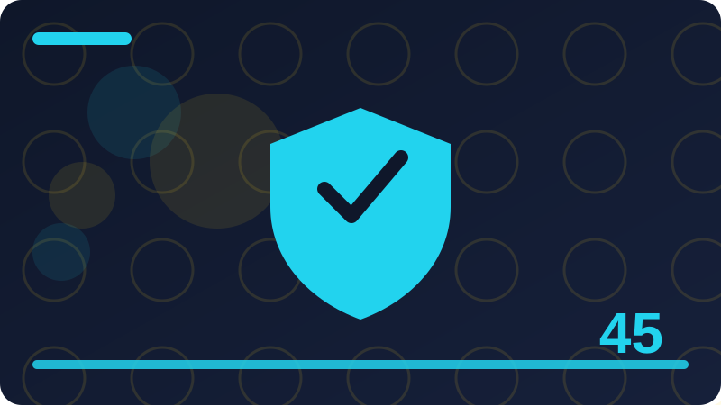

Chapter 45: Careers in Cyber Security in Plain Words

Section 1: What Cyber Security Work Looks Like
In this section on what cyber security work looks like, we focus on one practical part of careers in cyber security in plain words. This section explains one idea in plain words, without jargon getting in the way. If a word feels new, pause and picture what it means in everyday life before you move on. Security ideas often sound complicated because experts use short technical words for simple actions, like locking a door, checking a list, or writing a note. Once you translate the idea into everyday language, the next step usually becomes obvious.
People often ask whether one person can really make a difference against large online threats. The honest answer is yes, at the level that matters most: your own accounts, your own home, and your own team. Most harm starts with a simple weakness close to home, not with a spectacular break-in. By fixing the simple weaknesses first, you remove the easiest path and force any attacker to work much harder, which usually means they move on.
Here is a safe way to practise. First, write down what you want to check and why, in one sentence. Second, work only on a device, account, or network that belongs to you, or that you have clear written permission to use. Third, change one thing at a time and write down what changed, so you can undo it if needed. Fourth, check that everything still works after your change. Fifth, keep your note somewhere safe, because good notes turn a single experiment into lasting knowledge.
When you think about what cyber security work looks like, keep the same defender mindset you have used throughout this book: work only on systems you own or have written permission to use, change one thing at a time, and keep notes. Another common mistake is treating a tool or a checklist as a guarantee. No tool makes you perfectly safe, and no checklist covers every situation. Tools help you see and organise, but your judgement decides what matters. If a tool reports something alarming, read the detail, check it against what you know about your own devices, and consider whether it matches normal behaviour. Calm checking beats quick panic, and asking for help beats silent worry.
Before you move on, take one small action from this section today, not ten actions tomorrow. A single completed action, written down and checked, is real progress. Tomorrow you can take the next one. Over weeks, those single actions add up to a home, a team, or a career that is noticeably safer, and to confidence that is based on practice rather than hope. When in doubt, choose the safer, simpler option and ask for help. There is no prize for guessing, and a short question to a trusted person can prevent a long repair later. Write things down in your own words. Notes help you remember, help you explain your choices to others, and help you undo a change if it does not work as expected.
Check: In your own words, what is the most important idea from this section on what cyber security work looks like, and what safe step will you take on your own devices?
Section 2: Defender, Builder and Tester Roles
In this section on defender, builder and tester roles, we focus on one practical part of careers in cyber security in plain words. Welcome to a topic that sounds technical but rests on common sense. You already make safety decisions every day, such as locking your home, keeping keys private, and noticing when something looks out of place. This section builds on those habits and shows how the same thinking protects computers, phones, and home networks. Nothing here asks you to take risks or to test anyone else's system.
Why does this matter for an ordinary person? Because small, repeated habits decide most security outcomes. A single strong habit, repeated every week, protects you more than a dramatic one-time fix that you forget. Attackers, scammers, and careless mistakes all look for the easy opening: an unchanged password, an old device, or a setting nobody checked. Closing those easy openings, one at a time, is the heart of good defence.
A useful routine has four parts: look, think, act, and check. Look at the current setting or list before you touch anything. Think about what good looks like and what could go wrong if you change it carelessly. Act with one small, reversible step. Then check the result and write it down. If anything feels unclear, stop and ask a trusted source or a knowledgeable friend instead of guessing. Stopping is not failure; it is good security practice.
When you think about defender, builder and tester roles, keep the same defender mindset you have used throughout this book: work only on systems you own or have written permission to use, change one thing at a time, and keep notes. Watch out for the temptation to test boundaries that are not yours. Curiosity is a strength for a defender, but it must stay inside permission. Never probe a neighbour's network, a workplace system you do not manage, or a website you do not own, even if you mean no harm. Unauthorised testing can break things, break trust, and break the law. The safe outlet for curiosity is your own lab, your own accounts, and exercises with clear written permission.
To finish, ask yourself three questions: what did I learn, what did I change, and what will I check next week? Write the answers in plain words, as if you were explaining them to a friend who missed the lesson. Teaching an idea in your own words is one of the best ways to remember it. If you cannot explain it simply yet, that is useful information too: it tells you which part to revisit, not that you have failed. Write things down in your own words. Notes help you remember, help you explain your choices to others, and help you undo a change if it does not work as expected. Remember that every household and every team is different. Adapt general advice to your own devices, your own people, and your own risks, rather than copying someone else's setup exactly.
Check: In your own words, what is the most important idea from this section on defender, builder and tester roles, and what safe step will you take on your own devices?
Section 3: Security Analyst in Plain Words
In this section on security analyst in plain words, we focus on one practical part of careers in cyber security in plain words. Think of this topic as one small, practical skill rather than a big mystery. You do not need special talent to understand it, and you do not need expensive equipment to practise it well. The goal of this section is to give you a clear picture you can explain to a friend, and a few safe steps you can try on your own devices. Take it slowly, read each idea twice if it helps, and remember that steady learning beats rushing every time.
The reason this matters is not fear, but control. When you understand what is happening on your own devices, you can make calm choices instead of guessing under pressure. You will know what normal looks like, so unusual things stand out sooner. You will also know what to do next, which keeps a small problem from turning into a large one. That calm, informed control is what employers, families, and communities value in a defender.
Start small and build confidence gradually. Choose the simplest version of the task first, complete it fully, and only then try a slightly harder version. For example, practise on one device before you try three, and practise with a written checklist before you try from memory. Each small success teaches you what normal looks like and makes the next step easier. Rushing to the hardest version first usually creates confusion and mistakes that are easy to avoid.
When you think about security analyst in plain words, keep the same defender mindset you have used throughout this book: work only on systems you own or have written permission to use, change one thing at a time, and keep notes. Common mistakes are worth naming, because beginners often make the same ones. The first is changing many settings at once, which makes it hard to know what helped and what caused a problem. The second is copying a setting from the internet without checking whether it fits your own device or household. The third is forgetting to write down the original setting, so undoing a change becomes guesswork. Avoid all three by moving slowly, checking your own device manual, and keeping notes.
Finally, connect this section to your wider learning. Notice how it links to passwords, updates, backups, and careful habits you have already studied. Security is not a set of separate tricks; it is a connected routine where each habit supports the others. A strong password matters more when updates are current, and backups matter more when you practise recovery. Seeing those links helps you build a routine that lasts, rather than a collection of one-time fixes. Remember that every household and every team is different. Adapt general advice to your own devices, your own people, and your own risks, rather than copying someone else's setup exactly.
Check: In your own words, what is the most important idea from this section on security analyst in plain words, and what safe step will you take on your own devices?
Section 4: Working in a Security Operations Centre
In this section on working in a security operations centre, we focus on one practical part of careers in cyber security in plain words. This section explains one idea in plain words, without jargon getting in the way. If a word feels new, pause and picture what it means in everyday life before you move on. Security ideas often sound complicated because experts use short technical words for simple actions, like locking a door, checking a list, or writing a note. Once you translate the idea into everyday language, the next step usually becomes obvious.
People often ask whether one person can really make a difference against large online threats. The honest answer is yes, at the level that matters most: your own accounts, your own home, and your own team. Most harm starts with a simple weakness close to home, not with a spectacular break-in. By fixing the simple weaknesses first, you remove the easiest path and force any attacker to work much harder, which usually means they move on.
Here is a safe way to practise. First, write down what you want to check and why, in one sentence. Second, work only on a device, account, or network that belongs to you, or that you have clear written permission to use. Third, change one thing at a time and write down what changed, so you can undo it if needed. Fourth, check that everything still works after your change. Fifth, keep your note somewhere safe, because good notes turn a single experiment into lasting knowledge.
When you think about working in a security operations centre, keep the same defender mindset you have used throughout this book: work only on systems you own or have written permission to use, change one thing at a time, and keep notes. Another common mistake is treating a tool or a checklist as a guarantee. No tool makes you perfectly safe, and no checklist covers every situation. Tools help you see and organise, but your judgement decides what matters. If a tool reports something alarming, read the detail, check it against what you know about your own devices, and consider whether it matches normal behaviour. Calm checking beats quick panic, and asking for help beats silent worry.
Before you move on, take one small action from this section today, not ten actions tomorrow. A single completed action, written down and checked, is real progress. Tomorrow you can take the next one. Over weeks, those single actions add up to a home, a team, or a career that is noticeably safer, and to confidence that is based on practice rather than hope. Check your work after you finish. A quick check that things still work, and that you can undo what you did, is part of the task, not an extra step. Keep learning in small steps. One clear idea, practised well, is worth more than ten ideas skimmed and forgotten.
Check: In your own words, what is the most important idea from this section on working in a security operations centre, and what safe step will you take on your own devices?
Section 5: Incident Responder in Plain Words
In this section on incident responder in plain words, we focus on one practical part of careers in cyber security in plain words. Welcome to a topic that sounds technical but rests on common sense. You already make safety decisions every day, such as locking your home, keeping keys private, and noticing when something looks out of place. This section builds on those habits and shows how the same thinking protects computers, phones, and home networks. Nothing here asks you to take risks or to test anyone else's system.
Why does this matter for an ordinary person? Because small, repeated habits decide most security outcomes. A single strong habit, repeated every week, protects you more than a dramatic one-time fix that you forget. Attackers, scammers, and careless mistakes all look for the easy opening: an unchanged password, an old device, or a setting nobody checked. Closing those easy openings, one at a time, is the heart of good defence.
A useful routine has four parts: look, think, act, and check. Look at the current setting or list before you touch anything. Think about what good looks like and what could go wrong if you change it carelessly. Act with one small, reversible step. Then check the result and write it down. If anything feels unclear, stop and ask a trusted source or a knowledgeable friend instead of guessing. Stopping is not failure; it is good security practice.
When you think about incident responder in plain words, keep the same defender mindset you have used throughout this book: work only on systems you own or have written permission to use, change one thing at a time, and keep notes. Watch out for the temptation to test boundaries that are not yours. Curiosity is a strength for a defender, but it must stay inside permission. Never probe a neighbour's network, a workplace system you do not manage, or a website you do not own, even if you mean no harm. Unauthorised testing can break things, break trust, and break the law. The safe outlet for curiosity is your own lab, your own accounts, and exercises with clear written permission.
To finish, ask yourself three questions: what did I learn, what did I change, and what will I check next week? Write the answers in plain words, as if you were explaining them to a friend who missed the lesson. Teaching an idea in your own words is one of the best ways to remember it. If you cannot explain it simply yet, that is useful information too: it tells you which part to revisit, not that you have failed. Keep learning in small steps. One clear idea, practised well, is worth more than ten ideas skimmed and forgotten. Respect other people's privacy while you practise. Work only with your own data and devices, and ask permission before you look at anything that belongs to someone else.
# Defensive career log: record skills YOU practised on your own systems.
# Honest records matter more than inflated claims.
skills = ['password checks', 'backup practice', 'log reading', 'lab setup']
for skill in skills:
print(f'Practised: {skill}. Write one sentence about what you did and what you learned.')Check: In your own words, what is the most important idea from this section on incident responder in plain words, and what safe step will you take on your own devices?
Section 6: Threat Intelligence in Plain Words
In this section on threat intelligence in plain words, we focus on one practical part of careers in cyber security in plain words. Think of this topic as one small, practical skill rather than a big mystery. You do not need special talent to understand it, and you do not need expensive equipment to practise it well. The goal of this section is to give you a clear picture you can explain to a friend, and a few safe steps you can try on your own devices. Take it slowly, read each idea twice if it helps, and remember that steady learning beats rushing every time.
The reason this matters is not fear, but control. When you understand what is happening on your own devices, you can make calm choices instead of guessing under pressure. You will know what normal looks like, so unusual things stand out sooner. You will also know what to do next, which keeps a small problem from turning into a large one. That calm, informed control is what employers, families, and communities value in a defender.
Start small and build confidence gradually. Choose the simplest version of the task first, complete it fully, and only then try a slightly harder version. For example, practise on one device before you try three, and practise with a written checklist before you try from memory. Each small success teaches you what normal looks like and makes the next step easier. Rushing to the hardest version first usually creates confusion and mistakes that are easy to avoid.
When you think about threat intelligence in plain words, keep the same defender mindset you have used throughout this book: work only on systems you own or have written permission to use, change one thing at a time, and keep notes. Common mistakes are worth naming, because beginners often make the same ones. The first is changing many settings at once, which makes it hard to know what helped and what caused a problem. The second is copying a setting from the internet without checking whether it fits your own device or household. The third is forgetting to write down the original setting, so undoing a change becomes guesswork. Avoid all three by moving slowly, checking your own device manual, and keeping notes.
Finally, connect this section to your wider learning. Notice how it links to passwords, updates, backups, and careful habits you have already studied. Security is not a set of separate tricks; it is a connected routine where each habit supports the others. A strong password matters more when updates are current, and backups matter more when you practise recovery. Seeing those links helps you build a routine that lasts, rather than a collection of one-time fixes. Respect other people's privacy while you practise. Work only with your own data and devices, and ask permission before you look at anything that belongs to someone else.
Check: In your own words, what is the most important idea from this section on threat intelligence in plain words, and what safe step will you take on your own devices?
Section 7: Governance, Risk and Compliance Roles
In this section on governance, risk and compliance roles, we focus on one practical part of careers in cyber security in plain words. This section explains one idea in plain words, without jargon getting in the way. If a word feels new, pause and picture what it means in everyday life before you move on. Security ideas often sound complicated because experts use short technical words for simple actions, like locking a door, checking a list, or writing a note. Once you translate the idea into everyday language, the next step usually becomes obvious.
People often ask whether one person can really make a difference against large online threats. The honest answer is yes, at the level that matters most: your own accounts, your own home, and your own team. Most harm starts with a simple weakness close to home, not with a spectacular break-in. By fixing the simple weaknesses first, you remove the easiest path and force any attacker to work much harder, which usually means they move on.
Here is a safe way to practise. First, write down what you want to check and why, in one sentence. Second, work only on a device, account, or network that belongs to you, or that you have clear written permission to use. Third, change one thing at a time and write down what changed, so you can undo it if needed. Fourth, check that everything still works after your change. Fifth, keep your note somewhere safe, because good notes turn a single experiment into lasting knowledge.
When you think about governance, risk and compliance roles, keep the same defender mindset you have used throughout this book: work only on systems you own or have written permission to use, change one thing at a time, and keep notes. Another common mistake is treating a tool or a checklist as a guarantee. No tool makes you perfectly safe, and no checklist covers every situation. Tools help you see and organise, but your judgement decides what matters. If a tool reports something alarming, read the detail, check it against what you know about your own devices, and consider whether it matches normal behaviour. Calm checking beats quick panic, and asking for help beats silent worry.
Before you move on, take one small action from this section today, not ten actions tomorrow. A single completed action, written down and checked, is real progress. Tomorrow you can take the next one. Over weeks, those single actions add up to a home, a team, or a career that is noticeably safer, and to confidence that is based on practice rather than hope. Stay patient with yourself. Security skills grow through repetition, and early confusion is normal. Revisit a section after a week of practice and it will often feel much clearer. Good defence is mostly about attention and routine, not about secret knowledge. Pay attention to what changes, keep a simple routine, and review your notes regularly, and you will catch most problems while they are still small.
Check: In your own words, what is the most important idea from this section on governance, risk and compliance roles, and what safe step will you take on your own devices?
Section 8: Security Engineer in Plain Words
In this section on security engineer in plain words, we focus on one practical part of careers in cyber security in plain words. Welcome to a topic that sounds technical but rests on common sense. You already make safety decisions every day, such as locking your home, keeping keys private, and noticing when something looks out of place. This section builds on those habits and shows how the same thinking protects computers, phones, and home networks. Nothing here asks you to take risks or to test anyone else's system.
Why does this matter for an ordinary person? Because small, repeated habits decide most security outcomes. A single strong habit, repeated every week, protects you more than a dramatic one-time fix that you forget. Attackers, scammers, and careless mistakes all look for the easy opening: an unchanged password, an old device, or a setting nobody checked. Closing those easy openings, one at a time, is the heart of good defence.
A useful routine has four parts: look, think, act, and check. Look at the current setting or list before you touch anything. Think about what good looks like and what could go wrong if you change it carelessly. Act with one small, reversible step. Then check the result and write it down. If anything feels unclear, stop and ask a trusted source or a knowledgeable friend instead of guessing. Stopping is not failure; it is good security practice.
When you think about security engineer in plain words, keep the same defender mindset you have used throughout this book: work only on systems you own or have written permission to use, change one thing at a time, and keep notes. Watch out for the temptation to test boundaries that are not yours. Curiosity is a strength for a defender, but it must stay inside permission. Never probe a neighbour's network, a workplace system you do not manage, or a website you do not own, even if you mean no harm. Unauthorised testing can break things, break trust, and break the law. The safe outlet for curiosity is your own lab, your own accounts, and exercises with clear written permission.
To finish, ask yourself three questions: what did I learn, what did I change, and what will I check next week? Write the answers in plain words, as if you were explaining them to a friend who missed the lesson. Teaching an idea in your own words is one of the best ways to remember it. If you cannot explain it simply yet, that is useful information too: it tells you which part to revisit, not that you have failed. Good defence is mostly about attention and routine, not about secret knowledge. Pay attention to what changes, keep a simple routine, and review your notes regularly, and you will catch most problems while they are still small. When in doubt, choose the safer, simpler option and ask for help. There is no prize for guessing, and a short question to a trusted person can prevent a long repair later.
Check: In your own words, what is the most important idea from this section on security engineer in plain words, and what safe step will you take on your own devices?
Section 9: Cloud Security in Plain Words
In this section on cloud security in plain words, we focus on one practical part of careers in cyber security in plain words. Think of this topic as one small, practical skill rather than a big mystery. You do not need special talent to understand it, and you do not need expensive equipment to practise it well. The goal of this section is to give you a clear picture you can explain to a friend, and a few safe steps you can try on your own devices. Take it slowly, read each idea twice if it helps, and remember that steady learning beats rushing every time.
The reason this matters is not fear, but control. When you understand what is happening on your own devices, you can make calm choices instead of guessing under pressure. You will know what normal looks like, so unusual things stand out sooner. You will also know what to do next, which keeps a small problem from turning into a large one. That calm, informed control is what employers, families, and communities value in a defender.
Start small and build confidence gradually. Choose the simplest version of the task first, complete it fully, and only then try a slightly harder version. For example, practise on one device before you try three, and practise with a written checklist before you try from memory. Each small success teaches you what normal looks like and makes the next step easier. Rushing to the hardest version first usually creates confusion and mistakes that are easy to avoid.
When you think about cloud security in plain words, keep the same defender mindset you have used throughout this book: work only on systems you own or have written permission to use, change one thing at a time, and keep notes. Common mistakes are worth naming, because beginners often make the same ones. The first is changing many settings at once, which makes it hard to know what helped and what caused a problem. The second is copying a setting from the internet without checking whether it fits your own device or household. The third is forgetting to write down the original setting, so undoing a change becomes guesswork. Avoid all three by moving slowly, checking your own device manual, and keeping notes.
Finally, connect this section to your wider learning. Notice how it links to passwords, updates, backups, and careful habits you have already studied. Security is not a set of separate tricks; it is a connected routine where each habit supports the others. A strong password matters more when updates are current, and backups matter more when you practise recovery. Seeing those links helps you build a routine that lasts, rather than a collection of one-time fixes. When in doubt, choose the safer, simpler option and ask for help. There is no prize for guessing, and a short question to a trusted person can prevent a long repair later.
Check: In your own words, what is the most important idea from this section on cloud security in plain words, and what safe step will you take on your own devices?
Section 10: Network Security Roles
In this section on network security roles, we focus on one practical part of careers in cyber security in plain words. This section explains one idea in plain words, without jargon getting in the way. If a word feels new, pause and picture what it means in everyday life before you move on. Security ideas often sound complicated because experts use short technical words for simple actions, like locking a door, checking a list, or writing a note. Once you translate the idea into everyday language, the next step usually becomes obvious.
People often ask whether one person can really make a difference against large online threats. The honest answer is yes, at the level that matters most: your own accounts, your own home, and your own team. Most harm starts with a simple weakness close to home, not with a spectacular break-in. By fixing the simple weaknesses first, you remove the easiest path and force any attacker to work much harder, which usually means they move on.
Here is a safe way to practise. First, write down what you want to check and why, in one sentence. Second, work only on a device, account, or network that belongs to you, or that you have clear written permission to use. Third, change one thing at a time and write down what changed, so you can undo it if needed. Fourth, check that everything still works after your change. Fifth, keep your note somewhere safe, because good notes turn a single experiment into lasting knowledge.
When you think about network security roles, keep the same defender mindset you have used throughout this book: work only on systems you own or have written permission to use, change one thing at a time, and keep notes. Another common mistake is treating a tool or a checklist as a guarantee. No tool makes you perfectly safe, and no checklist covers every situation. Tools help you see and organise, but your judgement decides what matters. If a tool reports something alarming, read the detail, check it against what you know about your own devices, and consider whether it matches normal behaviour. Calm checking beats quick panic, and asking for help beats silent worry.
Before you move on, take one small action from this section today, not ten actions tomorrow. A single completed action, written down and checked, is real progress. Tomorrow you can take the next one. Over weeks, those single actions add up to a home, a team, or a career that is noticeably safer, and to confidence that is based on practice rather than hope. Write things down in your own words. Notes help you remember, help you explain your choices to others, and help you undo a change if it does not work as expected. Remember that every household and every team is different. Adapt general advice to your own devices, your own people, and your own risks, rather than copying someone else's setup exactly.
# Defensive career log: record skills YOU practised on your own systems.
# Honest records matter more than inflated claims.
skills = ['password checks', 'backup practice', 'log reading', 'lab setup']
for skill in skills:
print(f'Practised: {skill}. Write one sentence about what you did and what you learned.')Check: In your own words, what is the most important idea from this section on network security roles, and what safe step will you take on your own devices?
Section 11: Application Security Roles
In this section on application security roles, we focus on one practical part of careers in cyber security in plain words. Welcome to a topic that sounds technical but rests on common sense. You already make safety decisions every day, such as locking your home, keeping keys private, and noticing when something looks out of place. This section builds on those habits and shows how the same thinking protects computers, phones, and home networks. Nothing here asks you to take risks or to test anyone else's system.
Why does this matter for an ordinary person? Because small, repeated habits decide most security outcomes. A single strong habit, repeated every week, protects you more than a dramatic one-time fix that you forget. Attackers, scammers, and careless mistakes all look for the easy opening: an unchanged password, an old device, or a setting nobody checked. Closing those easy openings, one at a time, is the heart of good defence.
A useful routine has four parts: look, think, act, and check. Look at the current setting or list before you touch anything. Think about what good looks like and what could go wrong if you change it carelessly. Act with one small, reversible step. Then check the result and write it down. If anything feels unclear, stop and ask a trusted source or a knowledgeable friend instead of guessing. Stopping is not failure; it is good security practice.
When you think about application security roles, keep the same defender mindset you have used throughout this book: work only on systems you own or have written permission to use, change one thing at a time, and keep notes. Watch out for the temptation to test boundaries that are not yours. Curiosity is a strength for a defender, but it must stay inside permission. Never probe a neighbour's network, a workplace system you do not manage, or a website you do not own, even if you mean no harm. Unauthorised testing can break things, break trust, and break the law. The safe outlet for curiosity is your own lab, your own accounts, and exercises with clear written permission.
To finish, ask yourself three questions: what did I learn, what did I change, and what will I check next week? Write the answers in plain words, as if you were explaining them to a friend who missed the lesson. Teaching an idea in your own words is one of the best ways to remember it. If you cannot explain it simply yet, that is useful information too: it tells you which part to revisit, not that you have failed. Remember that every household and every team is different. Adapt general advice to your own devices, your own people, and your own risks, rather than copying someone else's setup exactly. Check your work after you finish. A quick check that things still work, and that you can undo what you did, is part of the task, not an extra step.
Check: In your own words, what is the most important idea from this section on application security roles, and what safe step will you take on your own devices?
Section 12: Penetration Tester: Permission First
In this section on penetration tester: permission first, we focus on one practical part of careers in cyber security in plain words. Think of this topic as one small, practical skill rather than a big mystery. You do not need special talent to understand it, and you do not need expensive equipment to practise it well. The goal of this section is to give you a clear picture you can explain to a friend, and a few safe steps you can try on your own devices. Take it slowly, read each idea twice if it helps, and remember that steady learning beats rushing every time.
The reason this matters is not fear, but control. When you understand what is happening on your own devices, you can make calm choices instead of guessing under pressure. You will know what normal looks like, so unusual things stand out sooner. You will also know what to do next, which keeps a small problem from turning into a large one. That calm, informed control is what employers, families, and communities value in a defender.
Start small and build confidence gradually. Choose the simplest version of the task first, complete it fully, and only then try a slightly harder version. For example, practise on one device before you try three, and practise with a written checklist before you try from memory. Each small success teaches you what normal looks like and makes the next step easier. Rushing to the hardest version first usually creates confusion and mistakes that are easy to avoid.
When you think about penetration tester: permission first, keep the same defender mindset you have used throughout this book: work only on systems you own or have written permission to use, change one thing at a time, and keep notes. Common mistakes are worth naming, because beginners often make the same ones. The first is changing many settings at once, which makes it hard to know what helped and what caused a problem. The second is copying a setting from the internet without checking whether it fits your own device or household. The third is forgetting to write down the original setting, so undoing a change becomes guesswork. Avoid all three by moving slowly, checking your own device manual, and keeping notes.
Finally, connect this section to your wider learning. Notice how it links to passwords, updates, backups, and careful habits you have already studied. Security is not a set of separate tricks; it is a connected routine where each habit supports the others. A strong password matters more when updates are current, and backups matter more when you practise recovery. Seeing those links helps you build a routine that lasts, rather than a collection of one-time fixes. Check your work after you finish. A quick check that things still work, and that you can undo what you did, is part of the task, not an extra step.
Check: In your own words, what is the most important idea from this section on penetration tester: permission first, and what safe step will you take on your own devices?
Section 13: Digital Forensics in Plain Words
In this section on digital forensics in plain words, we focus on one practical part of careers in cyber security in plain words. This section explains one idea in plain words, without jargon getting in the way. If a word feels new, pause and picture what it means in everyday life before you move on. Security ideas often sound complicated because experts use short technical words for simple actions, like locking a door, checking a list, or writing a note. Once you translate the idea into everyday language, the next step usually becomes obvious.
People often ask whether one person can really make a difference against large online threats. The honest answer is yes, at the level that matters most: your own accounts, your own home, and your own team. Most harm starts with a simple weakness close to home, not with a spectacular break-in. By fixing the simple weaknesses first, you remove the easiest path and force any attacker to work much harder, which usually means they move on.
Here is a safe way to practise. First, write down what you want to check and why, in one sentence. Second, work only on a device, account, or network that belongs to you, or that you have clear written permission to use. Third, change one thing at a time and write down what changed, so you can undo it if needed. Fourth, check that everything still works after your change. Fifth, keep your note somewhere safe, because good notes turn a single experiment into lasting knowledge.
When you think about digital forensics in plain words, keep the same defender mindset you have used throughout this book: work only on systems you own or have written permission to use, change one thing at a time, and keep notes. Another common mistake is treating a tool or a checklist as a guarantee. No tool makes you perfectly safe, and no checklist covers every situation. Tools help you see and organise, but your judgement decides what matters. If a tool reports something alarming, read the detail, check it against what you know about your own devices, and consider whether it matches normal behaviour. Calm checking beats quick panic, and asking for help beats silent worry.
Before you move on, take one small action from this section today, not ten actions tomorrow. A single completed action, written down and checked, is real progress. Tomorrow you can take the next one. Over weeks, those single actions add up to a home, a team, or a career that is noticeably safer, and to confidence that is based on practice rather than hope. Keep learning in small steps. One clear idea, practised well, is worth more than ten ideas skimmed and forgotten. Respect other people's privacy while you practise. Work only with your own data and devices, and ask permission before you look at anything that belongs to someone else.
Check: In your own words, what is the most important idea from this section on digital forensics in plain words, and what safe step will you take on your own devices?
Section 14: Security Awareness Trainer
In this section on security awareness trainer, we focus on one practical part of careers in cyber security in plain words. Welcome to a topic that sounds technical but rests on common sense. You already make safety decisions every day, such as locking your home, keeping keys private, and noticing when something looks out of place. This section builds on those habits and shows how the same thinking protects computers, phones, and home networks. Nothing here asks you to take risks or to test anyone else's system.
Why does this matter for an ordinary person? Because small, repeated habits decide most security outcomes. A single strong habit, repeated every week, protects you more than a dramatic one-time fix that you forget. Attackers, scammers, and careless mistakes all look for the easy opening: an unchanged password, an old device, or a setting nobody checked. Closing those easy openings, one at a time, is the heart of good defence.
A useful routine has four parts: look, think, act, and check. Look at the current setting or list before you touch anything. Think about what good looks like and what could go wrong if you change it carelessly. Act with one small, reversible step. Then check the result and write it down. If anything feels unclear, stop and ask a trusted source or a knowledgeable friend instead of guessing. Stopping is not failure; it is good security practice.
When you think about security awareness trainer, keep the same defender mindset you have used throughout this book: work only on systems you own or have written permission to use, change one thing at a time, and keep notes. Watch out for the temptation to test boundaries that are not yours. Curiosity is a strength for a defender, but it must stay inside permission. Never probe a neighbour's network, a workplace system you do not manage, or a website you do not own, even if you mean no harm. Unauthorised testing can break things, break trust, and break the law. The safe outlet for curiosity is your own lab, your own accounts, and exercises with clear written permission.
To finish, ask yourself three questions: what did I learn, what did I change, and what will I check next week? Write the answers in plain words, as if you were explaining them to a friend who missed the lesson. Teaching an idea in your own words is one of the best ways to remember it. If you cannot explain it simply yet, that is useful information too: it tells you which part to revisit, not that you have failed. Respect other people's privacy while you practise. Work only with your own data and devices, and ask permission before you look at anything that belongs to someone else. Stay patient with yourself. Security skills grow through repetition, and early confusion is normal. Revisit a section after a week of practice and it will often feel much clearer.
Check: In your own words, what is the most important idea from this section on security awareness trainer, and what safe step will you take on your own devices?
Section 15: Security Manager and Leader
In this section on security manager and leader, we focus on one practical part of careers in cyber security in plain words. Think of this topic as one small, practical skill rather than a big mystery. You do not need special talent to understand it, and you do not need expensive equipment to practise it well. The goal of this section is to give you a clear picture you can explain to a friend, and a few safe steps you can try on your own devices. Take it slowly, read each idea twice if it helps, and remember that steady learning beats rushing every time.
The reason this matters is not fear, but control. When you understand what is happening on your own devices, you can make calm choices instead of guessing under pressure. You will know what normal looks like, so unusual things stand out sooner. You will also know what to do next, which keeps a small problem from turning into a large one. That calm, informed control is what employers, families, and communities value in a defender.
Start small and build confidence gradually. Choose the simplest version of the task first, complete it fully, and only then try a slightly harder version. For example, practise on one device before you try three, and practise with a written checklist before you try from memory. Each small success teaches you what normal looks like and makes the next step easier. Rushing to the hardest version first usually creates confusion and mistakes that are easy to avoid.
When you think about security manager and leader, keep the same defender mindset you have used throughout this book: work only on systems you own or have written permission to use, change one thing at a time, and keep notes. Common mistakes are worth naming, because beginners often make the same ones. The first is changing many settings at once, which makes it hard to know what helped and what caused a problem. The second is copying a setting from the internet without checking whether it fits your own device or household. The third is forgetting to write down the original setting, so undoing a change becomes guesswork. Avoid all three by moving slowly, checking your own device manual, and keeping notes.
Finally, connect this section to your wider learning. Notice how it links to passwords, updates, backups, and careful habits you have already studied. Security is not a set of separate tricks; it is a connected routine where each habit supports the others. A strong password matters more when updates are current, and backups matter more when you practise recovery. Seeing those links helps you build a routine that lasts, rather than a collection of one-time fixes. Stay patient with yourself. Security skills grow through repetition, and early confusion is normal. Revisit a section after a week of practice and it will often feel much clearer.
# Defensive career log: record skills YOU practised on your own systems.
# Honest records matter more than inflated claims.
skills = ['password checks', 'backup practice', 'log reading', 'lab setup']
for skill in skills:
print(f'Practised: {skill}. Write one sentence about what you did and what you learned.')Check: In your own words, what is the most important idea from this section on security manager and leader, and what safe step will you take on your own devices?
Section 16: Skills Employers Actually Ask For
In this section on skills employers actually ask for, we focus on one practical part of careers in cyber security in plain words. This section explains one idea in plain words, without jargon getting in the way. If a word feels new, pause and picture what it means in everyday life before you move on. Security ideas often sound complicated because experts use short technical words for simple actions, like locking a door, checking a list, or writing a note. Once you translate the idea into everyday language, the next step usually becomes obvious.
People often ask whether one person can really make a difference against large online threats. The honest answer is yes, at the level that matters most: your own accounts, your own home, and your own team. Most harm starts with a simple weakness close to home, not with a spectacular break-in. By fixing the simple weaknesses first, you remove the easiest path and force any attacker to work much harder, which usually means they move on.
Here is a safe way to practise. First, write down what you want to check and why, in one sentence. Second, work only on a device, account, or network that belongs to you, or that you have clear written permission to use. Third, change one thing at a time and write down what changed, so you can undo it if needed. Fourth, check that everything still works after your change. Fifth, keep your note somewhere safe, because good notes turn a single experiment into lasting knowledge.
When you think about skills employers actually ask for, keep the same defender mindset you have used throughout this book: work only on systems you own or have written permission to use, change one thing at a time, and keep notes. Another common mistake is treating a tool or a checklist as a guarantee. No tool makes you perfectly safe, and no checklist covers every situation. Tools help you see and organise, but your judgement decides what matters. If a tool reports something alarming, read the detail, check it against what you know about your own devices, and consider whether it matches normal behaviour. Calm checking beats quick panic, and asking for help beats silent worry.
Before you move on, take one small action from this section today, not ten actions tomorrow. A single completed action, written down and checked, is real progress. Tomorrow you can take the next one. Over weeks, those single actions add up to a home, a team, or a career that is noticeably safer, and to confidence that is based on practice rather than hope. Good defence is mostly about attention and routine, not about secret knowledge. Pay attention to what changes, keep a simple routine, and review your notes regularly, and you will catch most problems while they are still small. When in doubt, choose the safer, simpler option and ask for help. There is no prize for guessing, and a short question to a trusted person can prevent a long repair later.
Check: In your own words, what is the most important idea from this section on skills employers actually ask for, and what safe step will you take on your own devices?
Section 17: Technical Skills in Plain Words
In this section on technical skills in plain words, we focus on one practical part of careers in cyber security in plain words. Welcome to a topic that sounds technical but rests on common sense. You already make safety decisions every day, such as locking your home, keeping keys private, and noticing when something looks out of place. This section builds on those habits and shows how the same thinking protects computers, phones, and home networks. Nothing here asks you to take risks or to test anyone else's system.
Why does this matter for an ordinary person? Because small, repeated habits decide most security outcomes. A single strong habit, repeated every week, protects you more than a dramatic one-time fix that you forget. Attackers, scammers, and careless mistakes all look for the easy opening: an unchanged password, an old device, or a setting nobody checked. Closing those easy openings, one at a time, is the heart of good defence.
A useful routine has four parts: look, think, act, and check. Look at the current setting or list before you touch anything. Think about what good looks like and what could go wrong if you change it carelessly. Act with one small, reversible step. Then check the result and write it down. If anything feels unclear, stop and ask a trusted source or a knowledgeable friend instead of guessing. Stopping is not failure; it is good security practice.
When you think about technical skills in plain words, keep the same defender mindset you have used throughout this book: work only on systems you own or have written permission to use, change one thing at a time, and keep notes. Watch out for the temptation to test boundaries that are not yours. Curiosity is a strength for a defender, but it must stay inside permission. Never probe a neighbour's network, a workplace system you do not manage, or a website you do not own, even if you mean no harm. Unauthorised testing can break things, break trust, and break the law. The safe outlet for curiosity is your own lab, your own accounts, and exercises with clear written permission.
To finish, ask yourself three questions: what did I learn, what did I change, and what will I check next week? Write the answers in plain words, as if you were explaining them to a friend who missed the lesson. Teaching an idea in your own words is one of the best ways to remember it. If you cannot explain it simply yet, that is useful information too: it tells you which part to revisit, not that you have failed. When in doubt, choose the safer, simpler option and ask for help. There is no prize for guessing, and a short question to a trusted person can prevent a long repair later. Write things down in your own words. Notes help you remember, help you explain your choices to others, and help you undo a change if it does not work as expected.
Check: In your own words, what is the most important idea from this section on technical skills in plain words, and what safe step will you take on your own devices?
Section 18: People Skills in Security
In this section on people skills in security, we focus on one practical part of careers in cyber security in plain words. Think of this topic as one small, practical skill rather than a big mystery. You do not need special talent to understand it, and you do not need expensive equipment to practise it well. The goal of this section is to give you a clear picture you can explain to a friend, and a few safe steps you can try on your own devices. Take it slowly, read each idea twice if it helps, and remember that steady learning beats rushing every time.
The reason this matters is not fear, but control. When you understand what is happening on your own devices, you can make calm choices instead of guessing under pressure. You will know what normal looks like, so unusual things stand out sooner. You will also know what to do next, which keeps a small problem from turning into a large one. That calm, informed control is what employers, families, and communities value in a defender.
Start small and build confidence gradually. Choose the simplest version of the task first, complete it fully, and only then try a slightly harder version. For example, practise on one device before you try three, and practise with a written checklist before you try from memory. Each small success teaches you what normal looks like and makes the next step easier. Rushing to the hardest version first usually creates confusion and mistakes that are easy to avoid.
When you think about people skills in security, keep the same defender mindset you have used throughout this book: work only on systems you own or have written permission to use, change one thing at a time, and keep notes. Common mistakes are worth naming, because beginners often make the same ones. The first is changing many settings at once, which makes it hard to know what helped and what caused a problem. The second is copying a setting from the internet without checking whether it fits your own device or household. The third is forgetting to write down the original setting, so undoing a change becomes guesswork. Avoid all three by moving slowly, checking your own device manual, and keeping notes.
Finally, connect this section to your wider learning. Notice how it links to passwords, updates, backups, and careful habits you have already studied. Security is not a set of separate tricks; it is a connected routine where each habit supports the others. A strong password matters more when updates are current, and backups matter more when you practise recovery. Seeing those links helps you build a routine that lasts, rather than a collection of one-time fixes. Write things down in your own words. Notes help you remember, help you explain your choices to others, and help you undo a change if it does not work as expected.
Check: In your own words, what is the most important idea from this section on people skills in security, and what safe step will you take on your own devices?
Section 19: Writing and Reporting Skills
In this section on writing and reporting skills, we focus on one practical part of careers in cyber security in plain words. This section explains one idea in plain words, without jargon getting in the way. If a word feels new, pause and picture what it means in everyday life before you move on. Security ideas often sound complicated because experts use short technical words for simple actions, like locking a door, checking a list, or writing a note. Once you translate the idea into everyday language, the next step usually becomes obvious.
People often ask whether one person can really make a difference against large online threats. The honest answer is yes, at the level that matters most: your own accounts, your own home, and your own team. Most harm starts with a simple weakness close to home, not with a spectacular break-in. By fixing the simple weaknesses first, you remove the easiest path and force any attacker to work much harder, which usually means they move on.
Here is a safe way to practise. First, write down what you want to check and why, in one sentence. Second, work only on a device, account, or network that belongs to you, or that you have clear written permission to use. Third, change one thing at a time and write down what changed, so you can undo it if needed. Fourth, check that everything still works after your change. Fifth, keep your note somewhere safe, because good notes turn a single experiment into lasting knowledge.
When you think about writing and reporting skills, keep the same defender mindset you have used throughout this book: work only on systems you own or have written permission to use, change one thing at a time, and keep notes. Another common mistake is treating a tool or a checklist as a guarantee. No tool makes you perfectly safe, and no checklist covers every situation. Tools help you see and organise, but your judgement decides what matters. If a tool reports something alarming, read the detail, check it against what you know about your own devices, and consider whether it matches normal behaviour. Calm checking beats quick panic, and asking for help beats silent worry.
Before you move on, take one small action from this section today, not ten actions tomorrow. A single completed action, written down and checked, is real progress. Tomorrow you can take the next one. Over weeks, those single actions add up to a home, a team, or a career that is noticeably safer, and to confidence that is based on practice rather than hope. Remember that every household and every team is different. Adapt general advice to your own devices, your own people, and your own risks, rather than copying someone else's setup exactly. Check your work after you finish. A quick check that things still work, and that you can undo what you did, is part of the task, not an extra step.
Check: In your own words, what is the most important idea from this section on writing and reporting skills, and what safe step will you take on your own devices?
Section 20: Learning on the Job
In this section on learning on the job, we focus on one practical part of careers in cyber security in plain words. Welcome to a topic that sounds technical but rests on common sense. You already make safety decisions every day, such as locking your home, keeping keys private, and noticing when something looks out of place. This section builds on those habits and shows how the same thinking protects computers, phones, and home networks. Nothing here asks you to take risks or to test anyone else's system.
Why does this matter for an ordinary person? Because small, repeated habits decide most security outcomes. A single strong habit, repeated every week, protects you more than a dramatic one-time fix that you forget. Attackers, scammers, and careless mistakes all look for the easy opening: an unchanged password, an old device, or a setting nobody checked. Closing those easy openings, one at a time, is the heart of good defence.
A useful routine has four parts: look, think, act, and check. Look at the current setting or list before you touch anything. Think about what good looks like and what could go wrong if you change it carelessly. Act with one small, reversible step. Then check the result and write it down. If anything feels unclear, stop and ask a trusted source or a knowledgeable friend instead of guessing. Stopping is not failure; it is good security practice.
When you think about learning on the job, keep the same defender mindset you have used throughout this book: work only on systems you own or have written permission to use, change one thing at a time, and keep notes. Watch out for the temptation to test boundaries that are not yours. Curiosity is a strength for a defender, but it must stay inside permission. Never probe a neighbour's network, a workplace system you do not manage, or a website you do not own, even if you mean no harm. Unauthorised testing can break things, break trust, and break the law. The safe outlet for curiosity is your own lab, your own accounts, and exercises with clear written permission.
To finish, ask yourself three questions: what did I learn, what did I change, and what will I check next week? Write the answers in plain words, as if you were explaining them to a friend who missed the lesson. Teaching an idea in your own words is one of the best ways to remember it. If you cannot explain it simply yet, that is useful information too: it tells you which part to revisit, not that you have failed. Check your work after you finish. A quick check that things still work, and that you can undo what you did, is part of the task, not an extra step. Keep learning in small steps. One clear idea, practised well, is worth more than ten ideas skimmed and forgotten.
# Defensive career log: record skills YOU practised on your own systems.
# Honest records matter more than inflated claims.
skills = ['password checks', 'backup practice', 'log reading', 'lab setup']
for skill in skills:
print(f'Practised: {skill}. Write one sentence about what you did and what you learned.')Check: In your own words, what is the most important idea from this section on learning on the job, and what safe step will you take on your own devices?
Section 21: Entry-Level Roles Explained
In this section on entry-level roles explained, we focus on one practical part of careers in cyber security in plain words. Think of this topic as one small, practical skill rather than a big mystery. You do not need special talent to understand it, and you do not need expensive equipment to practise it well. The goal of this section is to give you a clear picture you can explain to a friend, and a few safe steps you can try on your own devices. Take it slowly, read each idea twice if it helps, and remember that steady learning beats rushing every time.
The reason this matters is not fear, but control. When you understand what is happening on your own devices, you can make calm choices instead of guessing under pressure. You will know what normal looks like, so unusual things stand out sooner. You will also know what to do next, which keeps a small problem from turning into a large one. That calm, informed control is what employers, families, and communities value in a defender.
Start small and build confidence gradually. Choose the simplest version of the task first, complete it fully, and only then try a slightly harder version. For example, practise on one device before you try three, and practise with a written checklist before you try from memory. Each small success teaches you what normal looks like and makes the next step easier. Rushing to the hardest version first usually creates confusion and mistakes that are easy to avoid.
When you think about entry-level roles explained, keep the same defender mindset you have used throughout this book: work only on systems you own or have written permission to use, change one thing at a time, and keep notes. Common mistakes are worth naming, because beginners often make the same ones. The first is changing many settings at once, which makes it hard to know what helped and what caused a problem. The second is copying a setting from the internet without checking whether it fits your own device or household. The third is forgetting to write down the original setting, so undoing a change becomes guesswork. Avoid all three by moving slowly, checking your own device manual, and keeping notes.
Finally, connect this section to your wider learning. Notice how it links to passwords, updates, backups, and careful habits you have already studied. Security is not a set of separate tricks; it is a connected routine where each habit supports the others. A strong password matters more when updates are current, and backups matter more when you practise recovery. Seeing those links helps you build a routine that lasts, rather than a collection of one-time fixes. Keep learning in small steps. One clear idea, practised well, is worth more than ten ideas skimmed and forgotten. Respect other people's privacy while you practise. Work only with your own data and devices, and ask permission before you look at anything that belongs to someone else.
Check: In your own words, what is the most important idea from this section on entry-level roles explained, and what safe step will you take on your own devices?
Section 22: Internships and Apprenticeships
In this section on internships and apprenticeships, we focus on one practical part of careers in cyber security in plain words. This section explains one idea in plain words, without jargon getting in the way. If a word feels new, pause and picture what it means in everyday life before you move on. Security ideas often sound complicated because experts use short technical words for simple actions, like locking a door, checking a list, or writing a note. Once you translate the idea into everyday language, the next step usually becomes obvious.
People often ask whether one person can really make a difference against large online threats. The honest answer is yes, at the level that matters most: your own accounts, your own home, and your own team. Most harm starts with a simple weakness close to home, not with a spectacular break-in. By fixing the simple weaknesses first, you remove the easiest path and force any attacker to work much harder, which usually means they move on.
Here is a safe way to practise. First, write down what you want to check and why, in one sentence. Second, work only on a device, account, or network that belongs to you, or that you have clear written permission to use. Third, change one thing at a time and write down what changed, so you can undo it if needed. Fourth, check that everything still works after your change. Fifth, keep your note somewhere safe, because good notes turn a single experiment into lasting knowledge.
When you think about internships and apprenticeships, keep the same defender mindset you have used throughout this book: work only on systems you own or have written permission to use, change one thing at a time, and keep notes. Another common mistake is treating a tool or a checklist as a guarantee. No tool makes you perfectly safe, and no checklist covers every situation. Tools help you see and organise, but your judgement decides what matters. If a tool reports something alarming, read the detail, check it against what you know about your own devices, and consider whether it matches normal behaviour. Calm checking beats quick panic, and asking for help beats silent worry.
Before you move on, take one small action from this section today, not ten actions tomorrow. A single completed action, written down and checked, is real progress. Tomorrow you can take the next one. Over weeks, those single actions add up to a home, a team, or a career that is noticeably safer, and to confidence that is based on practice rather than hope. Respect other people's privacy while you practise. Work only with your own data and devices, and ask permission before you look at anything that belongs to someone else. Stay patient with yourself. Security skills grow through repetition, and early confusion is normal. Revisit a section after a week of practice and it will often feel much clearer.
Check: In your own words, what is the most important idea from this section on internships and apprenticeships, and what safe step will you take on your own devices?
Section 23: Volunteering and Community Work
In this section on volunteering and community work, we focus on one practical part of careers in cyber security in plain words. Welcome to a topic that sounds technical but rests on common sense. You already make safety decisions every day, such as locking your home, keeping keys private, and noticing when something looks out of place. This section builds on those habits and shows how the same thinking protects computers, phones, and home networks. Nothing here asks you to take risks or to test anyone else's system.
Why does this matter for an ordinary person? Because small, repeated habits decide most security outcomes. A single strong habit, repeated every week, protects you more than a dramatic one-time fix that you forget. Attackers, scammers, and careless mistakes all look for the easy opening: an unchanged password, an old device, or a setting nobody checked. Closing those easy openings, one at a time, is the heart of good defence.
A useful routine has four parts: look, think, act, and check. Look at the current setting or list before you touch anything. Think about what good looks like and what could go wrong if you change it carelessly. Act with one small, reversible step. Then check the result and write it down. If anything feels unclear, stop and ask a trusted source or a knowledgeable friend instead of guessing. Stopping is not failure; it is good security practice.
When you think about volunteering and community work, keep the same defender mindset you have used throughout this book: work only on systems you own or have written permission to use, change one thing at a time, and keep notes. Watch out for the temptation to test boundaries that are not yours. Curiosity is a strength for a defender, but it must stay inside permission. Never probe a neighbour's network, a workplace system you do not manage, or a website you do not own, even if you mean no harm. Unauthorised testing can break things, break trust, and break the law. The safe outlet for curiosity is your own lab, your own accounts, and exercises with clear written permission.
To finish, ask yourself three questions: what did I learn, what did I change, and what will I check next week? Write the answers in plain words, as if you were explaining them to a friend who missed the lesson. Teaching an idea in your own words is one of the best ways to remember it. If you cannot explain it simply yet, that is useful information too: it tells you which part to revisit, not that you have failed. Stay patient with yourself. Security skills grow through repetition, and early confusion is normal. Revisit a section after a week of practice and it will often feel much clearer. Good defence is mostly about attention and routine, not about secret knowledge. Pay attention to what changes, keep a simple routine, and review your notes regularly, and you will catch most problems while they are still small.
Check: In your own words, what is the most important idea from this section on volunteering and community work, and what safe step will you take on your own devices?
Section 24: Building Skills at Home Safely
In this section on building skills at home safely, we focus on one practical part of careers in cyber security in plain words. Think of this topic as one small, practical skill rather than a big mystery. You do not need special talent to understand it, and you do not need expensive equipment to practise it well. The goal of this section is to give you a clear picture you can explain to a friend, and a few safe steps you can try on your own devices. Take it slowly, read each idea twice if it helps, and remember that steady learning beats rushing every time.
The reason this matters is not fear, but control. When you understand what is happening on your own devices, you can make calm choices instead of guessing under pressure. You will know what normal looks like, so unusual things stand out sooner. You will also know what to do next, which keeps a small problem from turning into a large one. That calm, informed control is what employers, families, and communities value in a defender.
Start small and build confidence gradually. Choose the simplest version of the task first, complete it fully, and only then try a slightly harder version. For example, practise on one device before you try three, and practise with a written checklist before you try from memory. Each small success teaches you what normal looks like and makes the next step easier. Rushing to the hardest version first usually creates confusion and mistakes that are easy to avoid.
When you think about building skills at home safely, keep the same defender mindset you have used throughout this book: work only on systems you own or have written permission to use, change one thing at a time, and keep notes. Common mistakes are worth naming, because beginners often make the same ones. The first is changing many settings at once, which makes it hard to know what helped and what caused a problem. The second is copying a setting from the internet without checking whether it fits your own device or household. The third is forgetting to write down the original setting, so undoing a change becomes guesswork. Avoid all three by moving slowly, checking your own device manual, and keeping notes.
Finally, connect this section to your wider learning. Notice how it links to passwords, updates, backups, and careful habits you have already studied. Security is not a set of separate tricks; it is a connected routine where each habit supports the others. A strong password matters more when updates are current, and backups matter more when you practise recovery. Seeing those links helps you build a routine that lasts, rather than a collection of one-time fixes. Good defence is mostly about attention and routine, not about secret knowledge. Pay attention to what changes, keep a simple routine, and review your notes regularly, and you will catch most problems while they are still small.
Check: In your own words, what is the most important idea from this section on building skills at home safely, and what safe step will you take on your own devices?
Section 25: Certifications in Plain Words
In this section on certifications in plain words, we focus on one practical part of careers in cyber security in plain words. This section explains one idea in plain words, without jargon getting in the way. If a word feels new, pause and picture what it means in everyday life before you move on. Security ideas often sound complicated because experts use short technical words for simple actions, like locking a door, checking a list, or writing a note. Once you translate the idea into everyday language, the next step usually becomes obvious.
People often ask whether one person can really make a difference against large online threats. The honest answer is yes, at the level that matters most: your own accounts, your own home, and your own team. Most harm starts with a simple weakness close to home, not with a spectacular break-in. By fixing the simple weaknesses first, you remove the easiest path and force any attacker to work much harder, which usually means they move on.
Here is a safe way to practise. First, write down what you want to check and why, in one sentence. Second, work only on a device, account, or network that belongs to you, or that you have clear written permission to use. Third, change one thing at a time and write down what changed, so you can undo it if needed. Fourth, check that everything still works after your change. Fifth, keep your note somewhere safe, because good notes turn a single experiment into lasting knowledge.
When you think about certifications in plain words, keep the same defender mindset you have used throughout this book: work only on systems you own or have written permission to use, change one thing at a time, and keep notes. Another common mistake is treating a tool or a checklist as a guarantee. No tool makes you perfectly safe, and no checklist covers every situation. Tools help you see and organise, but your judgement decides what matters. If a tool reports something alarming, read the detail, check it against what you know about your own devices, and consider whether it matches normal behaviour. Calm checking beats quick panic, and asking for help beats silent worry.
Before you move on, take one small action from this section today, not ten actions tomorrow. A single completed action, written down and checked, is real progress. Tomorrow you can take the next one. Over weeks, those single actions add up to a home, a team, or a career that is noticeably safer, and to confidence that is based on practice rather than hope. When in doubt, choose the safer, simpler option and ask for help. There is no prize for guessing, and a short question to a trusted person can prevent a long repair later. Write things down in your own words. Notes help you remember, help you explain your choices to others, and help you undo a change if it does not work as expected.
# Defensive career log: record skills YOU practised on your own systems.
# Honest records matter more than inflated claims.
skills = ['password checks', 'backup practice', 'log reading', 'lab setup']
for skill in skills:
print(f'Practised: {skill}. Write one sentence about what you did and what you learned.')Check: In your own words, what is the most important idea from this section on certifications in plain words, and what safe step will you take on your own devices?
Section 26: Degrees: Helpful, Not the Only Route
In this section on degrees: helpful, not the only route, we focus on one practical part of careers in cyber security in plain words. Welcome to a topic that sounds technical but rests on common sense. You already make safety decisions every day, such as locking your home, keeping keys private, and noticing when something looks out of place. This section builds on those habits and shows how the same thinking protects computers, phones, and home networks. Nothing here asks you to take risks or to test anyone else's system.
Why does this matter for an ordinary person? Because small, repeated habits decide most security outcomes. A single strong habit, repeated every week, protects you more than a dramatic one-time fix that you forget. Attackers, scammers, and careless mistakes all look for the easy opening: an unchanged password, an old device, or a setting nobody checked. Closing those easy openings, one at a time, is the heart of good defence.
A useful routine has four parts: look, think, act, and check. Look at the current setting or list before you touch anything. Think about what good looks like and what could go wrong if you change it carelessly. Act with one small, reversible step. Then check the result and write it down. If anything feels unclear, stop and ask a trusted source or a knowledgeable friend instead of guessing. Stopping is not failure; it is good security practice.
When you think about degrees: helpful, not the only route, keep the same defender mindset you have used throughout this book: work only on systems you own or have written permission to use, change one thing at a time, and keep notes. Watch out for the temptation to test boundaries that are not yours. Curiosity is a strength for a defender, but it must stay inside permission. Never probe a neighbour's network, a workplace system you do not manage, or a website you do not own, even if you mean no harm. Unauthorised testing can break things, break trust, and break the law. The safe outlet for curiosity is your own lab, your own accounts, and exercises with clear written permission.
To finish, ask yourself three questions: what did I learn, what did I change, and what will I check next week? Write the answers in plain words, as if you were explaining them to a friend who missed the lesson. Teaching an idea in your own words is one of the best ways to remember it. If you cannot explain it simply yet, that is useful information too: it tells you which part to revisit, not that you have failed. Write things down in your own words. Notes help you remember, help you explain your choices to others, and help you undo a change if it does not work as expected. Remember that every household and every team is different. Adapt general advice to your own devices, your own people, and your own risks, rather than copying someone else's setup exactly.
Check: In your own words, what is the most important idea from this section on degrees: helpful, not the only route, and what safe step will you take on your own devices?
Section 27: Self-Taught Routes Honestly
In this section on self-taught routes honestly, we focus on one practical part of careers in cyber security in plain words. Think of this topic as one small, practical skill rather than a big mystery. You do not need special talent to understand it, and you do not need expensive equipment to practise it well. The goal of this section is to give you a clear picture you can explain to a friend, and a few safe steps you can try on your own devices. Take it slowly, read each idea twice if it helps, and remember that steady learning beats rushing every time.
The reason this matters is not fear, but control. When you understand what is happening on your own devices, you can make calm choices instead of guessing under pressure. You will know what normal looks like, so unusual things stand out sooner. You will also know what to do next, which keeps a small problem from turning into a large one. That calm, informed control is what employers, families, and communities value in a defender.
Start small and build confidence gradually. Choose the simplest version of the task first, complete it fully, and only then try a slightly harder version. For example, practise on one device before you try three, and practise with a written checklist before you try from memory. Each small success teaches you what normal looks like and makes the next step easier. Rushing to the hardest version first usually creates confusion and mistakes that are easy to avoid.
When you think about self-taught routes honestly, keep the same defender mindset you have used throughout this book: work only on systems you own or have written permission to use, change one thing at a time, and keep notes. Common mistakes are worth naming, because beginners often make the same ones. The first is changing many settings at once, which makes it hard to know what helped and what caused a problem. The second is copying a setting from the internet without checking whether it fits your own device or household. The third is forgetting to write down the original setting, so undoing a change becomes guesswork. Avoid all three by moving slowly, checking your own device manual, and keeping notes.
Finally, connect this section to your wider learning. Notice how it links to passwords, updates, backups, and careful habits you have already studied. Security is not a set of separate tricks; it is a connected routine where each habit supports the others. A strong password matters more when updates are current, and backups matter more when you practise recovery. Seeing those links helps you build a routine that lasts, rather than a collection of one-time fixes. Remember that every household and every team is different. Adapt general advice to your own devices, your own people, and your own risks, rather than copying someone else's setup exactly.
Check: In your own words, what is the most important idea from this section on self-taught routes honestly, and what safe step will you take on your own devices?
Section 28: Your First Portfolio, Honestly
In this section on your first portfolio, honestly, we focus on one practical part of careers in cyber security in plain words. This section explains one idea in plain words, without jargon getting in the way. If a word feels new, pause and picture what it means in everyday life before you move on. Security ideas often sound complicated because experts use short technical words for simple actions, like locking a door, checking a list, or writing a note. Once you translate the idea into everyday language, the next step usually becomes obvious.
People often ask whether one person can really make a difference against large online threats. The honest answer is yes, at the level that matters most: your own accounts, your own home, and your own team. Most harm starts with a simple weakness close to home, not with a spectacular break-in. By fixing the simple weaknesses first, you remove the easiest path and force any attacker to work much harder, which usually means they move on.
Here is a safe way to practise. First, write down what you want to check and why, in one sentence. Second, work only on a device, account, or network that belongs to you, or that you have clear written permission to use. Third, change one thing at a time and write down what changed, so you can undo it if needed. Fourth, check that everything still works after your change. Fifth, keep your note somewhere safe, because good notes turn a single experiment into lasting knowledge.
When you think about your first portfolio, honestly, keep the same defender mindset you have used throughout this book: work only on systems you own or have written permission to use, change one thing at a time, and keep notes. Another common mistake is treating a tool or a checklist as a guarantee. No tool makes you perfectly safe, and no checklist covers every situation. Tools help you see and organise, but your judgement decides what matters. If a tool reports something alarming, read the detail, check it against what you know about your own devices, and consider whether it matches normal behaviour. Calm checking beats quick panic, and asking for help beats silent worry.
Before you move on, take one small action from this section today, not ten actions tomorrow. A single completed action, written down and checked, is real progress. Tomorrow you can take the next one. Over weeks, those single actions add up to a home, a team, or a career that is noticeably safer, and to confidence that is based on practice rather than hope. Check your work after you finish. A quick check that things still work, and that you can undo what you did, is part of the task, not an extra step. Keep learning in small steps. One clear idea, practised well, is worth more than ten ideas skimmed and forgotten.
Check: In your own words, what is the most important idea from this section on your first portfolio, honestly, and what safe step will you take on your own devices?
Section 29: Writing About Your Lab Work
In this section on writing about your lab work, we focus on one practical part of careers in cyber security in plain words. Welcome to a topic that sounds technical but rests on common sense. You already make safety decisions every day, such as locking your home, keeping keys private, and noticing when something looks out of place. This section builds on those habits and shows how the same thinking protects computers, phones, and home networks. Nothing here asks you to take risks or to test anyone else's system.
Why does this matter for an ordinary person? Because small, repeated habits decide most security outcomes. A single strong habit, repeated every week, protects you more than a dramatic one-time fix that you forget. Attackers, scammers, and careless mistakes all look for the easy opening: an unchanged password, an old device, or a setting nobody checked. Closing those easy openings, one at a time, is the heart of good defence.
A useful routine has four parts: look, think, act, and check. Look at the current setting or list before you touch anything. Think about what good looks like and what could go wrong if you change it carelessly. Act with one small, reversible step. Then check the result and write it down. If anything feels unclear, stop and ask a trusted source or a knowledgeable friend instead of guessing. Stopping is not failure; it is good security practice.
When you think about writing about your lab work, keep the same defender mindset you have used throughout this book: work only on systems you own or have written permission to use, change one thing at a time, and keep notes. Watch out for the temptation to test boundaries that are not yours. Curiosity is a strength for a defender, but it must stay inside permission. Never probe a neighbour's network, a workplace system you do not manage, or a website you do not own, even if you mean no harm. Unauthorised testing can break things, break trust, and break the law. The safe outlet for curiosity is your own lab, your own accounts, and exercises with clear written permission.
To finish, ask yourself three questions: what did I learn, what did I change, and what will I check next week? Write the answers in plain words, as if you were explaining them to a friend who missed the lesson. Teaching an idea in your own words is one of the best ways to remember it. If you cannot explain it simply yet, that is useful information too: it tells you which part to revisit, not that you have failed. Keep learning in small steps. One clear idea, practised well, is worth more than ten ideas skimmed and forgotten. Respect other people's privacy while you practise. Work only with your own data and devices, and ask permission before you look at anything that belongs to someone else.
Check: In your own words, what is the most important idea from this section on writing about your lab work, and what safe step will you take on your own devices?
Section 30: CVs for Security Roles
In this section on cvs for security roles, we focus on one practical part of careers in cyber security in plain words. Think of this topic as one small, practical skill rather than a big mystery. You do not need special talent to understand it, and you do not need expensive equipment to practise it well. The goal of this section is to give you a clear picture you can explain to a friend, and a few safe steps you can try on your own devices. Take it slowly, read each idea twice if it helps, and remember that steady learning beats rushing every time.
The reason this matters is not fear, but control. When you understand what is happening on your own devices, you can make calm choices instead of guessing under pressure. You will know what normal looks like, so unusual things stand out sooner. You will also know what to do next, which keeps a small problem from turning into a large one. That calm, informed control is what employers, families, and communities value in a defender.
Start small and build confidence gradually. Choose the simplest version of the task first, complete it fully, and only then try a slightly harder version. For example, practise on one device before you try three, and practise with a written checklist before you try from memory. Each small success teaches you what normal looks like and makes the next step easier. Rushing to the hardest version first usually creates confusion and mistakes that are easy to avoid.
When you think about cvs for security roles, keep the same defender mindset you have used throughout this book: work only on systems you own or have written permission to use, change one thing at a time, and keep notes. Common mistakes are worth naming, because beginners often make the same ones. The first is changing many settings at once, which makes it hard to know what helped and what caused a problem. The second is copying a setting from the internet without checking whether it fits your own device or household. The third is forgetting to write down the original setting, so undoing a change becomes guesswork. Avoid all three by moving slowly, checking your own device manual, and keeping notes.
Finally, connect this section to your wider learning. Notice how it links to passwords, updates, backups, and careful habits you have already studied. Security is not a set of separate tricks; it is a connected routine where each habit supports the others. A strong password matters more when updates are current, and backups matter more when you practise recovery. Seeing those links helps you build a routine that lasts, rather than a collection of one-time fixes. Respect other people's privacy while you practise. Work only with your own data and devices, and ask permission before you look at anything that belongs to someone else.
# Defensive career log: record skills YOU practised on your own systems.
# Honest records matter more than inflated claims.
skills = ['password checks', 'backup practice', 'log reading', 'lab setup']
for skill in skills:
print(f'Practised: {skill}. Write one sentence about what you did and what you learned.')Check: In your own words, what is the most important idea from this section on cvs for security roles, and what safe step will you take on your own devices?
Section 31: Interview Questions in Plain Words
In this section on interview questions in plain words, we focus on one practical part of careers in cyber security in plain words. This section explains one idea in plain words, without jargon getting in the way. If a word feels new, pause and picture what it means in everyday life before you move on. Security ideas often sound complicated because experts use short technical words for simple actions, like locking a door, checking a list, or writing a note. Once you translate the idea into everyday language, the next step usually becomes obvious.
People often ask whether one person can really make a difference against large online threats. The honest answer is yes, at the level that matters most: your own accounts, your own home, and your own team. Most harm starts with a simple weakness close to home, not with a spectacular break-in. By fixing the simple weaknesses first, you remove the easiest path and force any attacker to work much harder, which usually means they move on.
Here is a safe way to practise. First, write down what you want to check and why, in one sentence. Second, work only on a device, account, or network that belongs to you, or that you have clear written permission to use. Third, change one thing at a time and write down what changed, so you can undo it if needed. Fourth, check that everything still works after your change. Fifth, keep your note somewhere safe, because good notes turn a single experiment into lasting knowledge.
When you think about interview questions in plain words, keep the same defender mindset you have used throughout this book: work only on systems you own or have written permission to use, change one thing at a time, and keep notes. Another common mistake is treating a tool or a checklist as a guarantee. No tool makes you perfectly safe, and no checklist covers every situation. Tools help you see and organise, but your judgement decides what matters. If a tool reports something alarming, read the detail, check it against what you know about your own devices, and consider whether it matches normal behaviour. Calm checking beats quick panic, and asking for help beats silent worry.
Before you move on, take one small action from this section today, not ten actions tomorrow. A single completed action, written down and checked, is real progress. Tomorrow you can take the next one. Over weeks, those single actions add up to a home, a team, or a career that is noticeably safer, and to confidence that is based on practice rather than hope. Stay patient with yourself. Security skills grow through repetition, and early confusion is normal. Revisit a section after a week of practice and it will often feel much clearer. Good defence is mostly about attention and routine, not about secret knowledge. Pay attention to what changes, keep a simple routine, and review your notes regularly, and you will catch most problems while they are still small.
Check: In your own words, what is the most important idea from this section on interview questions in plain words, and what safe step will you take on your own devices?
Section 32: Practical Tasks in Interviews
In this section on practical tasks in interviews, we focus on one practical part of careers in cyber security in plain words. Welcome to a topic that sounds technical but rests on common sense. You already make safety decisions every day, such as locking your home, keeping keys private, and noticing when something looks out of place. This section builds on those habits and shows how the same thinking protects computers, phones, and home networks. Nothing here asks you to take risks or to test anyone else's system.
Why does this matter for an ordinary person? Because small, repeated habits decide most security outcomes. A single strong habit, repeated every week, protects you more than a dramatic one-time fix that you forget. Attackers, scammers, and careless mistakes all look for the easy opening: an unchanged password, an old device, or a setting nobody checked. Closing those easy openings, one at a time, is the heart of good defence.
A useful routine has four parts: look, think, act, and check. Look at the current setting or list before you touch anything. Think about what good looks like and what could go wrong if you change it carelessly. Act with one small, reversible step. Then check the result and write it down. If anything feels unclear, stop and ask a trusted source or a knowledgeable friend instead of guessing. Stopping is not failure; it is good security practice.
When you think about practical tasks in interviews, keep the same defender mindset you have used throughout this book: work only on systems you own or have written permission to use, change one thing at a time, and keep notes. Watch out for the temptation to test boundaries that are not yours. Curiosity is a strength for a defender, but it must stay inside permission. Never probe a neighbour's network, a workplace system you do not manage, or a website you do not own, even if you mean no harm. Unauthorised testing can break things, break trust, and break the law. The safe outlet for curiosity is your own lab, your own accounts, and exercises with clear written permission.
To finish, ask yourself three questions: what did I learn, what did I change, and what will I check next week? Write the answers in plain words, as if you were explaining them to a friend who missed the lesson. Teaching an idea in your own words is one of the best ways to remember it. If you cannot explain it simply yet, that is useful information too: it tells you which part to revisit, not that you have failed. Good defence is mostly about attention and routine, not about secret knowledge. Pay attention to what changes, keep a simple routine, and review your notes regularly, and you will catch most problems while they are still small. When in doubt, choose the safer, simpler option and ask for help. There is no prize for guessing, and a short question to a trusted person can prevent a long repair later.
Check: In your own words, what is the most important idea from this section on practical tasks in interviews, and what safe step will you take on your own devices?
Section 33: Ethics Questions in Interviews
In this section on ethics questions in interviews, we focus on one practical part of careers in cyber security in plain words. Think of this topic as one small, practical skill rather than a big mystery. You do not need special talent to understand it, and you do not need expensive equipment to practise it well. The goal of this section is to give you a clear picture you can explain to a friend, and a few safe steps you can try on your own devices. Take it slowly, read each idea twice if it helps, and remember that steady learning beats rushing every time.
The reason this matters is not fear, but control. When you understand what is happening on your own devices, you can make calm choices instead of guessing under pressure. You will know what normal looks like, so unusual things stand out sooner. You will also know what to do next, which keeps a small problem from turning into a large one. That calm, informed control is what employers, families, and communities value in a defender.
Start small and build confidence gradually. Choose the simplest version of the task first, complete it fully, and only then try a slightly harder version. For example, practise on one device before you try three, and practise with a written checklist before you try from memory. Each small success teaches you what normal looks like and makes the next step easier. Rushing to the hardest version first usually creates confusion and mistakes that are easy to avoid.
When you think about ethics questions in interviews, keep the same defender mindset you have used throughout this book: work only on systems you own or have written permission to use, change one thing at a time, and keep notes. Common mistakes are worth naming, because beginners often make the same ones. The first is changing many settings at once, which makes it hard to know what helped and what caused a problem. The second is copying a setting from the internet without checking whether it fits your own device or household. The third is forgetting to write down the original setting, so undoing a change becomes guesswork. Avoid all three by moving slowly, checking your own device manual, and keeping notes.
Finally, connect this section to your wider learning. Notice how it links to passwords, updates, backups, and careful habits you have already studied. Security is not a set of separate tricks; it is a connected routine where each habit supports the others. A strong password matters more when updates are current, and backups matter more when you practise recovery. Seeing those links helps you build a routine that lasts, rather than a collection of one-time fixes. When in doubt, choose the safer, simpler option and ask for help. There is no prize for guessing, and a short question to a trusted person can prevent a long repair later.
Check: In your own words, what is the most important idea from this section on ethics questions in interviews, and what safe step will you take on your own devices?
Section 34: Finding a Mentor
In this section on finding a mentor, we focus on one practical part of careers in cyber security in plain words. This section explains one idea in plain words, without jargon getting in the way. If a word feels new, pause and picture what it means in everyday life before you move on. Security ideas often sound complicated because experts use short technical words for simple actions, like locking a door, checking a list, or writing a note. Once you translate the idea into everyday language, the next step usually becomes obvious.
People often ask whether one person can really make a difference against large online threats. The honest answer is yes, at the level that matters most: your own accounts, your own home, and your own team. Most harm starts with a simple weakness close to home, not with a spectacular break-in. By fixing the simple weaknesses first, you remove the easiest path and force any attacker to work much harder, which usually means they move on.
Here is a safe way to practise. First, write down what you want to check and why, in one sentence. Second, work only on a device, account, or network that belongs to you, or that you have clear written permission to use. Third, change one thing at a time and write down what changed, so you can undo it if needed. Fourth, check that everything still works after your change. Fifth, keep your note somewhere safe, because good notes turn a single experiment into lasting knowledge.
When you think about finding a mentor, keep the same defender mindset you have used throughout this book: work only on systems you own or have written permission to use, change one thing at a time, and keep notes. Another common mistake is treating a tool or a checklist as a guarantee. No tool makes you perfectly safe, and no checklist covers every situation. Tools help you see and organise, but your judgement decides what matters. If a tool reports something alarming, read the detail, check it against what you know about your own devices, and consider whether it matches normal behaviour. Calm checking beats quick panic, and asking for help beats silent worry.
Before you move on, take one small action from this section today, not ten actions tomorrow. A single completed action, written down and checked, is real progress. Tomorrow you can take the next one. Over weeks, those single actions add up to a home, a team, or a career that is noticeably safer, and to confidence that is based on practice rather than hope. Write things down in your own words. Notes help you remember, help you explain your choices to others, and help you undo a change if it does not work as expected. Remember that every household and every team is different. Adapt general advice to your own devices, your own people, and your own risks, rather than copying someone else's setup exactly.
Check: In your own words, what is the most important idea from this section on finding a mentor, and what safe step will you take on your own devices?
Section 35: Communities and Meetups
In this section on communities and meetups, we focus on one practical part of careers in cyber security in plain words. Welcome to a topic that sounds technical but rests on common sense. You already make safety decisions every day, such as locking your home, keeping keys private, and noticing when something looks out of place. This section builds on those habits and shows how the same thinking protects computers, phones, and home networks. Nothing here asks you to take risks or to test anyone else's system.
Why does this matter for an ordinary person? Because small, repeated habits decide most security outcomes. A single strong habit, repeated every week, protects you more than a dramatic one-time fix that you forget. Attackers, scammers, and careless mistakes all look for the easy opening: an unchanged password, an old device, or a setting nobody checked. Closing those easy openings, one at a time, is the heart of good defence.
A useful routine has four parts: look, think, act, and check. Look at the current setting or list before you touch anything. Think about what good looks like and what could go wrong if you change it carelessly. Act with one small, reversible step. Then check the result and write it down. If anything feels unclear, stop and ask a trusted source or a knowledgeable friend instead of guessing. Stopping is not failure; it is good security practice.
When you think about communities and meetups, keep the same defender mindset you have used throughout this book: work only on systems you own or have written permission to use, change one thing at a time, and keep notes. Watch out for the temptation to test boundaries that are not yours. Curiosity is a strength for a defender, but it must stay inside permission. Never probe a neighbour's network, a workplace system you do not manage, or a website you do not own, even if you mean no harm. Unauthorised testing can break things, break trust, and break the law. The safe outlet for curiosity is your own lab, your own accounts, and exercises with clear written permission.
To finish, ask yourself three questions: what did I learn, what did I change, and what will I check next week? Write the answers in plain words, as if you were explaining them to a friend who missed the lesson. Teaching an idea in your own words is one of the best ways to remember it. If you cannot explain it simply yet, that is useful information too: it tells you which part to revisit, not that you have failed. Remember that every household and every team is different. Adapt general advice to your own devices, your own people, and your own risks, rather than copying someone else's setup exactly. Check your work after you finish. A quick check that things still work, and that you can undo what you did, is part of the task, not an extra step.
# Defensive career log: record skills YOU practised on your own systems.
# Honest records matter more than inflated claims.
skills = ['password checks', 'backup practice', 'log reading', 'lab setup']
for skill in skills:
print(f'Practised: {skill}. Write one sentence about what you did and what you learned.')Check: In your own words, what is the most important idea from this section on communities and meetups, and what safe step will you take on your own devices?
Section 36: Conferences for Beginners
In this section on conferences for beginners, we focus on one practical part of careers in cyber security in plain words. Think of this topic as one small, practical skill rather than a big mystery. You do not need special talent to understand it, and you do not need expensive equipment to practise it well. The goal of this section is to give you a clear picture you can explain to a friend, and a few safe steps you can try on your own devices. Take it slowly, read each idea twice if it helps, and remember that steady learning beats rushing every time.
The reason this matters is not fear, but control. When you understand what is happening on your own devices, you can make calm choices instead of guessing under pressure. You will know what normal looks like, so unusual things stand out sooner. You will also know what to do next, which keeps a small problem from turning into a large one. That calm, informed control is what employers, families, and communities value in a defender.
Start small and build confidence gradually. Choose the simplest version of the task first, complete it fully, and only then try a slightly harder version. For example, practise on one device before you try three, and practise with a written checklist before you try from memory. Each small success teaches you what normal looks like and makes the next step easier. Rushing to the hardest version first usually creates confusion and mistakes that are easy to avoid.
When you think about conferences for beginners, keep the same defender mindset you have used throughout this book: work only on systems you own or have written permission to use, change one thing at a time, and keep notes. Common mistakes are worth naming, because beginners often make the same ones. The first is changing many settings at once, which makes it hard to know what helped and what caused a problem. The second is copying a setting from the internet without checking whether it fits your own device or household. The third is forgetting to write down the original setting, so undoing a change becomes guesswork. Avoid all three by moving slowly, checking your own device manual, and keeping notes.
Finally, connect this section to your wider learning. Notice how it links to passwords, updates, backups, and careful habits you have already studied. Security is not a set of separate tricks; it is a connected routine where each habit supports the others. A strong password matters more when updates are current, and backups matter more when you practise recovery. Seeing those links helps you build a routine that lasts, rather than a collection of one-time fixes. Check your work after you finish. A quick check that things still work, and that you can undo what you did, is part of the task, not an extra step.
Check: In your own words, what is the most important idea from this section on conferences for beginners, and what safe step will you take on your own devices?
Section 37: Remote Security Work
In this section on remote security work, we focus on one practical part of careers in cyber security in plain words. This section explains one idea in plain words, without jargon getting in the way. If a word feels new, pause and picture what it means in everyday life before you move on. Security ideas often sound complicated because experts use short technical words for simple actions, like locking a door, checking a list, or writing a note. Once you translate the idea into everyday language, the next step usually becomes obvious.
People often ask whether one person can really make a difference against large online threats. The honest answer is yes, at the level that matters most: your own accounts, your own home, and your own team. Most harm starts with a simple weakness close to home, not with a spectacular break-in. By fixing the simple weaknesses first, you remove the easiest path and force any attacker to work much harder, which usually means they move on.
Here is a safe way to practise. First, write down what you want to check and why, in one sentence. Second, work only on a device, account, or network that belongs to you, or that you have clear written permission to use. Third, change one thing at a time and write down what changed, so you can undo it if needed. Fourth, check that everything still works after your change. Fifth, keep your note somewhere safe, because good notes turn a single experiment into lasting knowledge.
When you think about remote security work, keep the same defender mindset you have used throughout this book: work only on systems you own or have written permission to use, change one thing at a time, and keep notes. Another common mistake is treating a tool or a checklist as a guarantee. No tool makes you perfectly safe, and no checklist covers every situation. Tools help you see and organise, but your judgement decides what matters. If a tool reports something alarming, read the detail, check it against what you know about your own devices, and consider whether it matches normal behaviour. Calm checking beats quick panic, and asking for help beats silent worry.
Before you move on, take one small action from this section today, not ten actions tomorrow. A single completed action, written down and checked, is real progress. Tomorrow you can take the next one. Over weeks, those single actions add up to a home, a team, or a career that is noticeably safer, and to confidence that is based on practice rather than hope. Keep learning in small steps. One clear idea, practised well, is worth more than ten ideas skimmed and forgotten. Respect other people's privacy while you practise. Work only with your own data and devices, and ask permission before you look at anything that belongs to someone else. Stay patient with yourself. Security skills grow through repetition, and early confusion is normal. Revisit a section after a week of practice and it will often feel much clearer.
Check: In your own words, what is the most important idea from this section on remote security work, and what safe step will you take on your own devices?
Section 38: Shift Work and On-Call Life
In this section on shift work and on-call life, we focus on one practical part of careers in cyber security in plain words. Welcome to a topic that sounds technical but rests on common sense. You already make safety decisions every day, such as locking your home, keeping keys private, and noticing when something looks out of place. This section builds on those habits and shows how the same thinking protects computers, phones, and home networks. Nothing here asks you to take risks or to test anyone else's system.
Why does this matter for an ordinary person? Because small, repeated habits decide most security outcomes. A single strong habit, repeated every week, protects you more than a dramatic one-time fix that you forget. Attackers, scammers, and careless mistakes all look for the easy opening: an unchanged password, an old device, or a setting nobody checked. Closing those easy openings, one at a time, is the heart of good defence.
A useful routine has four parts: look, think, act, and check. Look at the current setting or list before you touch anything. Think about what good looks like and what could go wrong if you change it carelessly. Act with one small, reversible step. Then check the result and write it down. If anything feels unclear, stop and ask a trusted source or a knowledgeable friend instead of guessing. Stopping is not failure; it is good security practice.
When you think about shift work and on-call life, keep the same defender mindset you have used throughout this book: work only on systems you own or have written permission to use, change one thing at a time, and keep notes. Watch out for the temptation to test boundaries that are not yours. Curiosity is a strength for a defender, but it must stay inside permission. Never probe a neighbour's network, a workplace system you do not manage, or a website you do not own, even if you mean no harm. Unauthorised testing can break things, break trust, and break the law. The safe outlet for curiosity is your own lab, your own accounts, and exercises with clear written permission.
To finish, ask yourself three questions: what did I learn, what did I change, and what will I check next week? Write the answers in plain words, as if you were explaining them to a friend who missed the lesson. Teaching an idea in your own words is one of the best ways to remember it. If you cannot explain it simply yet, that is useful information too: it tells you which part to revisit, not that you have failed. Respect other people's privacy while you practise. Work only with your own data and devices, and ask permission before you look at anything that belongs to someone else. Stay patient with yourself. Security skills grow through repetition, and early confusion is normal. Revisit a section after a week of practice and it will often feel much clearer.
Check: In your own words, what is the most important idea from this section on shift work and on-call life, and what safe step will you take on your own devices?
Section 39: Pay in Plain Words
In this section on pay in plain words, we focus on one practical part of careers in cyber security in plain words. Think of this topic as one small, practical skill rather than a big mystery. You do not need special talent to understand it, and you do not need expensive equipment to practise it well. The goal of this section is to give you a clear picture you can explain to a friend, and a few safe steps you can try on your own devices. Take it slowly, read each idea twice if it helps, and remember that steady learning beats rushing every time.
The reason this matters is not fear, but control. When you understand what is happening on your own devices, you can make calm choices instead of guessing under pressure. You will know what normal looks like, so unusual things stand out sooner. You will also know what to do next, which keeps a small problem from turning into a large one. That calm, informed control is what employers, families, and communities value in a defender.
Start small and build confidence gradually. Choose the simplest version of the task first, complete it fully, and only then try a slightly harder version. For example, practise on one device before you try three, and practise with a written checklist before you try from memory. Each small success teaches you what normal looks like and makes the next step easier. Rushing to the hardest version first usually creates confusion and mistakes that are easy to avoid.
When you think about pay in plain words, keep the same defender mindset you have used throughout this book: work only on systems you own or have written permission to use, change one thing at a time, and keep notes. Common mistakes are worth naming, because beginners often make the same ones. The first is changing many settings at once, which makes it hard to know what helped and what caused a problem. The second is copying a setting from the internet without checking whether it fits your own device or household. The third is forgetting to write down the original setting, so undoing a change becomes guesswork. Avoid all three by moving slowly, checking your own device manual, and keeping notes.
Finally, connect this section to your wider learning. Notice how it links to passwords, updates, backups, and careful habits you have already studied. Security is not a set of separate tricks; it is a connected routine where each habit supports the others. A strong password matters more when updates are current, and backups matter more when you practise recovery. Seeing those links helps you build a routine that lasts, rather than a collection of one-time fixes. Stay patient with yourself. Security skills grow through repetition, and early confusion is normal. Revisit a section after a week of practice and it will often feel much clearer.
Check: In your own words, what is the most important idea from this section on pay in plain words, and what safe step will you take on your own devices?
Section 40: Growth: Junior to Senior
In this section on growth: junior to senior, we focus on one practical part of careers in cyber security in plain words. This section explains one idea in plain words, without jargon getting in the way. If a word feels new, pause and picture what it means in everyday life before you move on. Security ideas often sound complicated because experts use short technical words for simple actions, like locking a door, checking a list, or writing a note. Once you translate the idea into everyday language, the next step usually becomes obvious.
People often ask whether one person can really make a difference against large online threats. The honest answer is yes, at the level that matters most: your own accounts, your own home, and your own team. Most harm starts with a simple weakness close to home, not with a spectacular break-in. By fixing the simple weaknesses first, you remove the easiest path and force any attacker to work much harder, which usually means they move on.
Here is a safe way to practise. First, write down what you want to check and why, in one sentence. Second, work only on a device, account, or network that belongs to you, or that you have clear written permission to use. Third, change one thing at a time and write down what changed, so you can undo it if needed. Fourth, check that everything still works after your change. Fifth, keep your note somewhere safe, because good notes turn a single experiment into lasting knowledge.
When you think about growth: junior to senior, keep the same defender mindset you have used throughout this book: work only on systems you own or have written permission to use, change one thing at a time, and keep notes. Another common mistake is treating a tool or a checklist as a guarantee. No tool makes you perfectly safe, and no checklist covers every situation. Tools help you see and organise, but your judgement decides what matters. If a tool reports something alarming, read the detail, check it against what you know about your own devices, and consider whether it matches normal behaviour. Calm checking beats quick panic, and asking for help beats silent worry.
Before you move on, take one small action from this section today, not ten actions tomorrow. A single completed action, written down and checked, is real progress. Tomorrow you can take the next one. Over weeks, those single actions add up to a home, a team, or a career that is noticeably safer, and to confidence that is based on practice rather than hope. Good defence is mostly about attention and routine, not about secret knowledge. Pay attention to what changes, keep a simple routine, and review your notes regularly, and you will catch most problems while they are still small. When in doubt, choose the safer, simpler option and ask for help. There is no prize for guessing, and a short question to a trusted person can prevent a long repair later.
# Defensive career log: record skills YOU practised on your own systems.
# Honest records matter more than inflated claims.
skills = ['password checks', 'backup practice', 'log reading', 'lab setup']
for skill in skills:
print(f'Practised: {skill}. Write one sentence about what you did and what you learned.')Check: In your own words, what is the most important idea from this section on growth: junior to senior, and what safe step will you take on your own devices?
Section 41: Specialising or Staying General
In this section on specialising or staying general, we focus on one practical part of careers in cyber security in plain words. Welcome to a topic that sounds technical but rests on common sense. You already make safety decisions every day, such as locking your home, keeping keys private, and noticing when something looks out of place. This section builds on those habits and shows how the same thinking protects computers, phones, and home networks. Nothing here asks you to take risks or to test anyone else's system.
Why does this matter for an ordinary person? Because small, repeated habits decide most security outcomes. A single strong habit, repeated every week, protects you more than a dramatic one-time fix that you forget. Attackers, scammers, and careless mistakes all look for the easy opening: an unchanged password, an old device, or a setting nobody checked. Closing those easy openings, one at a time, is the heart of good defence.
A useful routine has four parts: look, think, act, and check. Look at the current setting or list before you touch anything. Think about what good looks like and what could go wrong if you change it carelessly. Act with one small, reversible step. Then check the result and write it down. If anything feels unclear, stop and ask a trusted source or a knowledgeable friend instead of guessing. Stopping is not failure; it is good security practice.
When you think about specialising or staying general, keep the same defender mindset you have used throughout this book: work only on systems you own or have written permission to use, change one thing at a time, and keep notes. Watch out for the temptation to test boundaries that are not yours. Curiosity is a strength for a defender, but it must stay inside permission. Never probe a neighbour's network, a workplace system you do not manage, or a website you do not own, even if you mean no harm. Unauthorised testing can break things, break trust, and break the law. The safe outlet for curiosity is your own lab, your own accounts, and exercises with clear written permission.
To finish, ask yourself three questions: what did I learn, what did I change, and what will I check next week? Write the answers in plain words, as if you were explaining them to a friend who missed the lesson. Teaching an idea in your own words is one of the best ways to remember it. If you cannot explain it simply yet, that is useful information too: it tells you which part to revisit, not that you have failed. When in doubt, choose the safer, simpler option and ask for help. There is no prize for guessing, and a short question to a trusted person can prevent a long repair later. Write things down in your own words. Notes help you remember, help you explain your choices to others, and help you undo a change if it does not work as expected.
Check: In your own words, what is the most important idea from this section on specialising or staying general, and what safe step will you take on your own devices?
Section 42: Staying Current Without Burnout
In this section on staying current without burnout, we focus on one practical part of careers in cyber security in plain words. Think of this topic as one small, practical skill rather than a big mystery. You do not need special talent to understand it, and you do not need expensive equipment to practise it well. The goal of this section is to give you a clear picture you can explain to a friend, and a few safe steps you can try on your own devices. Take it slowly, read each idea twice if it helps, and remember that steady learning beats rushing every time.
The reason this matters is not fear, but control. When you understand what is happening on your own devices, you can make calm choices instead of guessing under pressure. You will know what normal looks like, so unusual things stand out sooner. You will also know what to do next, which keeps a small problem from turning into a large one. That calm, informed control is what employers, families, and communities value in a defender.
Start small and build confidence gradually. Choose the simplest version of the task first, complete it fully, and only then try a slightly harder version. For example, practise on one device before you try three, and practise with a written checklist before you try from memory. Each small success teaches you what normal looks like and makes the next step easier. Rushing to the hardest version first usually creates confusion and mistakes that are easy to avoid.
When you think about staying current without burnout, keep the same defender mindset you have used throughout this book: work only on systems you own or have written permission to use, change one thing at a time, and keep notes. Common mistakes are worth naming, because beginners often make the same ones. The first is changing many settings at once, which makes it hard to know what helped and what caused a problem. The second is copying a setting from the internet without checking whether it fits your own device or household. The third is forgetting to write down the original setting, so undoing a change becomes guesswork. Avoid all three by moving slowly, checking your own device manual, and keeping notes.
Finally, connect this section to your wider learning. Notice how it links to passwords, updates, backups, and careful habits you have already studied. Security is not a set of separate tricks; it is a connected routine where each habit supports the others. A strong password matters more when updates are current, and backups matter more when you practise recovery. Seeing those links helps you build a routine that lasts, rather than a collection of one-time fixes. Write things down in your own words. Notes help you remember, help you explain your choices to others, and help you undo a change if it does not work as expected.
Check: In your own words, what is the most important idea from this section on staying current without burnout, and what safe step will you take on your own devices?
Section 43: Ethics as a Career Asset
In this section on ethics as a career asset, we focus on one practical part of careers in cyber security in plain words. This section explains one idea in plain words, without jargon getting in the way. If a word feels new, pause and picture what it means in everyday life before you move on. Security ideas often sound complicated because experts use short technical words for simple actions, like locking a door, checking a list, or writing a note. Once you translate the idea into everyday language, the next step usually becomes obvious.
People often ask whether one person can really make a difference against large online threats. The honest answer is yes, at the level that matters most: your own accounts, your own home, and your own team. Most harm starts with a simple weakness close to home, not with a spectacular break-in. By fixing the simple weaknesses first, you remove the easiest path and force any attacker to work much harder, which usually means they move on.
Here is a safe way to practise. First, write down what you want to check and why, in one sentence. Second, work only on a device, account, or network that belongs to you, or that you have clear written permission to use. Third, change one thing at a time and write down what changed, so you can undo it if needed. Fourth, check that everything still works after your change. Fifth, keep your note somewhere safe, because good notes turn a single experiment into lasting knowledge.
When you think about ethics as a career asset, keep the same defender mindset you have used throughout this book: work only on systems you own or have written permission to use, change one thing at a time, and keep notes. Another common mistake is treating a tool or a checklist as a guarantee. No tool makes you perfectly safe, and no checklist covers every situation. Tools help you see and organise, but your judgement decides what matters. If a tool reports something alarming, read the detail, check it against what you know about your own devices, and consider whether it matches normal behaviour. Calm checking beats quick panic, and asking for help beats silent worry.
Before you move on, take one small action from this section today, not ten actions tomorrow. A single completed action, written down and checked, is real progress. Tomorrow you can take the next one. Over weeks, those single actions add up to a home, a team, or a career that is noticeably safer, and to confidence that is based on practice rather than hope. Remember that every household and every team is different. Adapt general advice to your own devices, your own people, and your own risks, rather than copying someone else's setup exactly. Check your work after you finish. A quick check that things still work, and that you can undo what you did, is part of the task, not an extra step.
Check: In your own words, what is the most important idea from this section on ethics as a career asset, and what safe step will you take on your own devices?
Section 44: When to Say No to a Job
In this section on when to say no to a job, we focus on one practical part of careers in cyber security in plain words. Welcome to a topic that sounds technical but rests on common sense. You already make safety decisions every day, such as locking your home, keeping keys private, and noticing when something looks out of place. This section builds on those habits and shows how the same thinking protects computers, phones, and home networks. Nothing here asks you to take risks or to test anyone else's system.
Why does this matter for an ordinary person? Because small, repeated habits decide most security outcomes. A single strong habit, repeated every week, protects you more than a dramatic one-time fix that you forget. Attackers, scammers, and careless mistakes all look for the easy opening: an unchanged password, an old device, or a setting nobody checked. Closing those easy openings, one at a time, is the heart of good defence.
A useful routine has four parts: look, think, act, and check. Look at the current setting or list before you touch anything. Think about what good looks like and what could go wrong if you change it carelessly. Act with one small, reversible step. Then check the result and write it down. If anything feels unclear, stop and ask a trusted source or a knowledgeable friend instead of guessing. Stopping is not failure; it is good security practice.
When you think about when to say no to a job, keep the same defender mindset you have used throughout this book: work only on systems you own or have written permission to use, change one thing at a time, and keep notes. Watch out for the temptation to test boundaries that are not yours. Curiosity is a strength for a defender, but it must stay inside permission. Never probe a neighbour's network, a workplace system you do not manage, or a website you do not own, even if you mean no harm. Unauthorised testing can break things, break trust, and break the law. The safe outlet for curiosity is your own lab, your own accounts, and exercises with clear written permission.
To finish, ask yourself three questions: what did I learn, what did I change, and what will I check next week? Write the answers in plain words, as if you were explaining them to a friend who missed the lesson. Teaching an idea in your own words is one of the best ways to remember it. If you cannot explain it simply yet, that is useful information too: it tells you which part to revisit, not that you have failed. Check your work after you finish. A quick check that things still work, and that you can undo what you did, is part of the task, not an extra step. Keep learning in small steps. One clear idea, practised well, is worth more than ten ideas skimmed and forgotten.
Check: In your own words, what is the most important idea from this section on when to say no to a job, and what safe step will you take on your own devices?
Section 45: Background Checks in Plain Words
In this section on background checks in plain words, we focus on one practical part of careers in cyber security in plain words. Think of this topic as one small, practical skill rather than a big mystery. You do not need special talent to understand it, and you do not need expensive equipment to practise it well. The goal of this section is to give you a clear picture you can explain to a friend, and a few safe steps you can try on your own devices. Take it slowly, read each idea twice if it helps, and remember that steady learning beats rushing every time.
The reason this matters is not fear, but control. When you understand what is happening on your own devices, you can make calm choices instead of guessing under pressure. You will know what normal looks like, so unusual things stand out sooner. You will also know what to do next, which keeps a small problem from turning into a large one. That calm, informed control is what employers, families, and communities value in a defender.
Start small and build confidence gradually. Choose the simplest version of the task first, complete it fully, and only then try a slightly harder version. For example, practise on one device before you try three, and practise with a written checklist before you try from memory. Each small success teaches you what normal looks like and makes the next step easier. Rushing to the hardest version first usually creates confusion and mistakes that are easy to avoid.
When you think about background checks in plain words, keep the same defender mindset you have used throughout this book: work only on systems you own or have written permission to use, change one thing at a time, and keep notes. Common mistakes are worth naming, because beginners often make the same ones. The first is changing many settings at once, which makes it hard to know what helped and what caused a problem. The second is copying a setting from the internet without checking whether it fits your own device or household. The third is forgetting to write down the original setting, so undoing a change becomes guesswork. Avoid all three by moving slowly, checking your own device manual, and keeping notes.
Finally, connect this section to your wider learning. Notice how it links to passwords, updates, backups, and careful habits you have already studied. Security is not a set of separate tricks; it is a connected routine where each habit supports the others. A strong password matters more when updates are current, and backups matter more when you practise recovery. Seeing those links helps you build a routine that lasts, rather than a collection of one-time fixes. Keep learning in small steps. One clear idea, practised well, is worth more than ten ideas skimmed and forgotten. Respect other people's privacy while you practise. Work only with your own data and devices, and ask permission before you look at anything that belongs to someone else.
# Defensive career log: record skills YOU practised on your own systems.
# Honest records matter more than inflated claims.
skills = ['password checks', 'backup practice', 'log reading', 'lab setup']
for skill in skills:
print(f'Practised: {skill}. Write one sentence about what you did and what you learned.')Check: In your own words, what is the most important idea from this section on background checks in plain words, and what safe step will you take on your own devices?
Section 46: Security Work in Small Companies
In this section on security work in small companies, we focus on one practical part of careers in cyber security in plain words. This section explains one idea in plain words, without jargon getting in the way. If a word feels new, pause and picture what it means in everyday life before you move on. Security ideas often sound complicated because experts use short technical words for simple actions, like locking a door, checking a list, or writing a note. Once you translate the idea into everyday language, the next step usually becomes obvious.
People often ask whether one person can really make a difference against large online threats. The honest answer is yes, at the level that matters most: your own accounts, your own home, and your own team. Most harm starts with a simple weakness close to home, not with a spectacular break-in. By fixing the simple weaknesses first, you remove the easiest path and force any attacker to work much harder, which usually means they move on.
Here is a safe way to practise. First, write down what you want to check and why, in one sentence. Second, work only on a device, account, or network that belongs to you, or that you have clear written permission to use. Third, change one thing at a time and write down what changed, so you can undo it if needed. Fourth, check that everything still works after your change. Fifth, keep your note somewhere safe, because good notes turn a single experiment into lasting knowledge.
When you think about security work in small companies, keep the same defender mindset you have used throughout this book: work only on systems you own or have written permission to use, change one thing at a time, and keep notes. Another common mistake is treating a tool or a checklist as a guarantee. No tool makes you perfectly safe, and no checklist covers every situation. Tools help you see and organise, but your judgement decides what matters. If a tool reports something alarming, read the detail, check it against what you know about your own devices, and consider whether it matches normal behaviour. Calm checking beats quick panic, and asking for help beats silent worry.
Before you move on, take one small action from this section today, not ten actions tomorrow. A single completed action, written down and checked, is real progress. Tomorrow you can take the next one. Over weeks, those single actions add up to a home, a team, or a career that is noticeably safer, and to confidence that is based on practice rather than hope. Respect other people's privacy while you practise. Work only with your own data and devices, and ask permission before you look at anything that belongs to someone else. Stay patient with yourself. Security skills grow through repetition, and early confusion is normal. Revisit a section after a week of practice and it will often feel much clearer.
Check: In your own words, what is the most important idea from this section on security work in small companies, and what safe step will you take on your own devices?
Section 47: Security Work in Big Companies
In this section on security work in big companies, we focus on one practical part of careers in cyber security in plain words. Welcome to a topic that sounds technical but rests on common sense. You already make safety decisions every day, such as locking your home, keeping keys private, and noticing when something looks out of place. This section builds on those habits and shows how the same thinking protects computers, phones, and home networks. Nothing here asks you to take risks or to test anyone else's system.
Why does this matter for an ordinary person? Because small, repeated habits decide most security outcomes. A single strong habit, repeated every week, protects you more than a dramatic one-time fix that you forget. Attackers, scammers, and careless mistakes all look for the easy opening: an unchanged password, an old device, or a setting nobody checked. Closing those easy openings, one at a time, is the heart of good defence.
A useful routine has four parts: look, think, act, and check. Look at the current setting or list before you touch anything. Think about what good looks like and what could go wrong if you change it carelessly. Act with one small, reversible step. Then check the result and write it down. If anything feels unclear, stop and ask a trusted source or a knowledgeable friend instead of guessing. Stopping is not failure; it is good security practice.
When you think about security work in big companies, keep the same defender mindset you have used throughout this book: work only on systems you own or have written permission to use, change one thing at a time, and keep notes. Watch out for the temptation to test boundaries that are not yours. Curiosity is a strength for a defender, but it must stay inside permission. Never probe a neighbour's network, a workplace system you do not manage, or a website you do not own, even if you mean no harm. Unauthorised testing can break things, break trust, and break the law. The safe outlet for curiosity is your own lab, your own accounts, and exercises with clear written permission.
To finish, ask yourself three questions: what did I learn, what did I change, and what will I check next week? Write the answers in plain words, as if you were explaining them to a friend who missed the lesson. Teaching an idea in your own words is one of the best ways to remember it. If you cannot explain it simply yet, that is useful information too: it tells you which part to revisit, not that you have failed. Stay patient with yourself. Security skills grow through repetition, and early confusion is normal. Revisit a section after a week of practice and it will often feel much clearer. Good defence is mostly about attention and routine, not about secret knowledge. Pay attention to what changes, keep a simple routine, and review your notes regularly, and you will catch most problems while they are still small.
Check: In your own words, what is the most important idea from this section on security work in big companies, and what safe step will you take on your own devices?
Section 48: Your Career Plan for One Year
In this section on your career plan for one year, we focus on one practical part of careers in cyber security in plain words. Think of this topic as one small, practical skill rather than a big mystery. You do not need special talent to understand it, and you do not need expensive equipment to practise it well. The goal of this section is to give you a clear picture you can explain to a friend, and a few safe steps you can try on your own devices. Take it slowly, read each idea twice if it helps, and remember that steady learning beats rushing every time.
The reason this matters is not fear, but control. When you understand what is happening on your own devices, you can make calm choices instead of guessing under pressure. You will know what normal looks like, so unusual things stand out sooner. You will also know what to do next, which keeps a small problem from turning into a large one. That calm, informed control is what employers, families, and communities value in a defender.
Start small and build confidence gradually. Choose the simplest version of the task first, complete it fully, and only then try a slightly harder version. For example, practise on one device before you try three, and practise with a written checklist before you try from memory. Each small success teaches you what normal looks like and makes the next step easier. Rushing to the hardest version first usually creates confusion and mistakes that are easy to avoid.
When you think about your career plan for one year, keep the same defender mindset you have used throughout this book: work only on systems you own or have written permission to use, change one thing at a time, and keep notes. Common mistakes are worth naming, because beginners often make the same ones. The first is changing many settings at once, which makes it hard to know what helped and what caused a problem. The second is copying a setting from the internet without checking whether it fits your own device or household. The third is forgetting to write down the original setting, so undoing a change becomes guesswork. Avoid all three by moving slowly, checking your own device manual, and keeping notes.
Finally, connect this section to your wider learning. Notice how it links to passwords, updates, backups, and careful habits you have already studied. Security is not a set of separate tricks; it is a connected routine where each habit supports the others. A strong password matters more when updates are current, and backups matter more when you practise recovery. Seeing those links helps you build a routine that lasts, rather than a collection of one-time fixes. Good defence is mostly about attention and routine, not about secret knowledge. Pay attention to what changes, keep a simple routine, and review your notes regularly, and you will catch most problems while they are still small.
Check: In your own words, what is the most important idea from this section on your career plan for one year, and what safe step will you take on your own devices?
Section 49: Your Career Plan for Five Years
In this section on your career plan for five years, we focus on one practical part of careers in cyber security in plain words. This section explains one idea in plain words, without jargon getting in the way. If a word feels new, pause and picture what it means in everyday life before you move on. Security ideas often sound complicated because experts use short technical words for simple actions, like locking a door, checking a list, or writing a note. Once you translate the idea into everyday language, the next step usually becomes obvious.
People often ask whether one person can really make a difference against large online threats. The honest answer is yes, at the level that matters most: your own accounts, your own home, and your own team. Most harm starts with a simple weakness close to home, not with a spectacular break-in. By fixing the simple weaknesses first, you remove the easiest path and force any attacker to work much harder, which usually means they move on.
Here is a safe way to practise. First, write down what you want to check and why, in one sentence. Second, work only on a device, account, or network that belongs to you, or that you have clear written permission to use. Third, change one thing at a time and write down what changed, so you can undo it if needed. Fourth, check that everything still works after your change. Fifth, keep your note somewhere safe, because good notes turn a single experiment into lasting knowledge.
When you think about your career plan for five years, keep the same defender mindset you have used throughout this book: work only on systems you own or have written permission to use, change one thing at a time, and keep notes. Another common mistake is treating a tool or a checklist as a guarantee. No tool makes you perfectly safe, and no checklist covers every situation. Tools help you see and organise, but your judgement decides what matters. If a tool reports something alarming, read the detail, check it against what you know about your own devices, and consider whether it matches normal behaviour. Calm checking beats quick panic, and asking for help beats silent worry.
Before you move on, take one small action from this section today, not ten actions tomorrow. A single completed action, written down and checked, is real progress. Tomorrow you can take the next one. Over weeks, those single actions add up to a home, a team, or a career that is noticeably safer, and to confidence that is based on practice rather than hope. When in doubt, choose the safer, simpler option and ask for help. There is no prize for guessing, and a short question to a trusted person can prevent a long repair later. Write things down in your own words. Notes help you remember, help you explain your choices to others, and help you undo a change if it does not work as expected.
Check: In your own words, what is the most important idea from this section on your career plan for five years, and what safe step will you take on your own devices?
Section 50: Starting Your First Step This Week
In this section on starting your first step this week, we focus on one practical part of careers in cyber security in plain words. Welcome to a topic that sounds technical but rests on common sense. You already make safety decisions every day, such as locking your home, keeping keys private, and noticing when something looks out of place. This section builds on those habits and shows how the same thinking protects computers, phones, and home networks. Nothing here asks you to take risks or to test anyone else's system.
Why does this matter for an ordinary person? Because small, repeated habits decide most security outcomes. A single strong habit, repeated every week, protects you more than a dramatic one-time fix that you forget. Attackers, scammers, and careless mistakes all look for the easy opening: an unchanged password, an old device, or a setting nobody checked. Closing those easy openings, one at a time, is the heart of good defence.
A useful routine has four parts: look, think, act, and check. Look at the current setting or list before you touch anything. Think about what good looks like and what could go wrong if you change it carelessly. Act with one small, reversible step. Then check the result and write it down. If anything feels unclear, stop and ask a trusted source or a knowledgeable friend instead of guessing. Stopping is not failure; it is good security practice.
When you think about starting your first step this week, keep the same defender mindset you have used throughout this book: work only on systems you own or have written permission to use, change one thing at a time, and keep notes. Watch out for the temptation to test boundaries that are not yours. Curiosity is a strength for a defender, but it must stay inside permission. Never probe a neighbour's network, a workplace system you do not manage, or a website you do not own, even if you mean no harm. Unauthorised testing can break things, break trust, and break the law. The safe outlet for curiosity is your own lab, your own accounts, and exercises with clear written permission.
To finish, ask yourself three questions: what did I learn, what did I change, and what will I check next week? Write the answers in plain words, as if you were explaining them to a friend who missed the lesson. Teaching an idea in your own words is one of the best ways to remember it. If you cannot explain it simply yet, that is useful information too: it tells you which part to revisit, not that you have failed. Write things down in your own words. Notes help you remember, help you explain your choices to others, and help you undo a change if it does not work as expected. Remember that every household and every team is different. Adapt general advice to your own devices, your own people, and your own risks, rather than copying someone else's setup exactly.
# Defensive career log: record skills YOU practised on your own systems.
# Honest records matter more than inflated claims.
skills = ['password checks', 'backup practice', 'log reading', 'lab setup']
for skill in skills:
print(f'Practised: {skill}. Write one sentence about what you did and what you learned.')Check: In your own words, what is the most important idea from this section on starting your first step this week, and what safe step will you take on your own devices?
Practical Task
Write an honest one-year career plan: list the defender skills you have already practised on your own systems, one role you want to learn more about, two free or low-cost learning steps you can take, and one honest portfolio item you can build in your own lab. Share the plan with a mentor or trusted friend for feedback.
Chapter Questions
- What does a security analyst do day to day, in plain words?
- Why are writing and communication skills important in cyber security work?
- How can honest lab practice help someone starting a security career?
- What should you consider before choosing a certification or learning path?
- What is one ethical rule every cyber security professional should follow, and why?
Comments